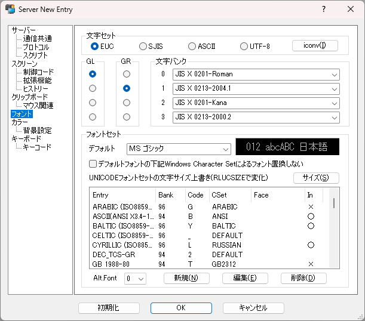
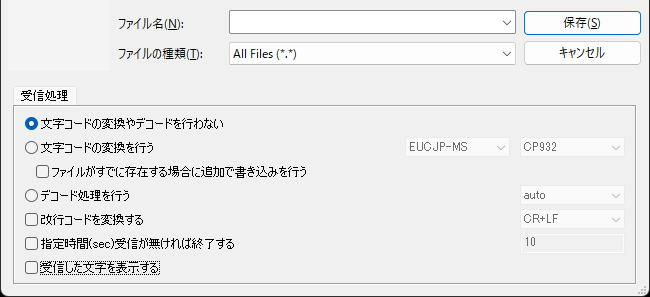
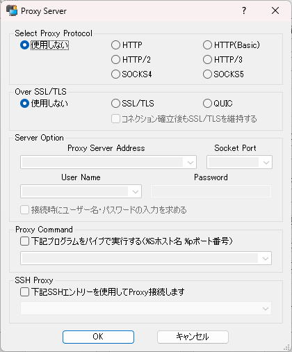
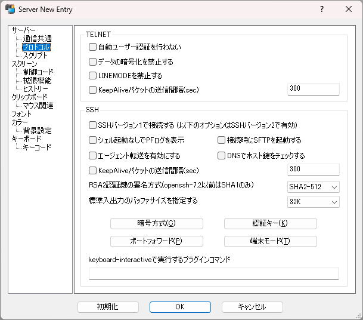
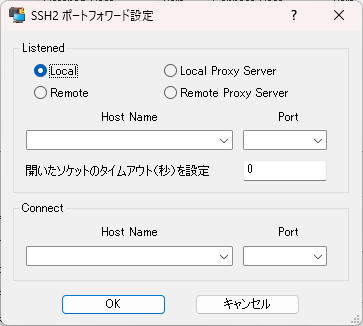
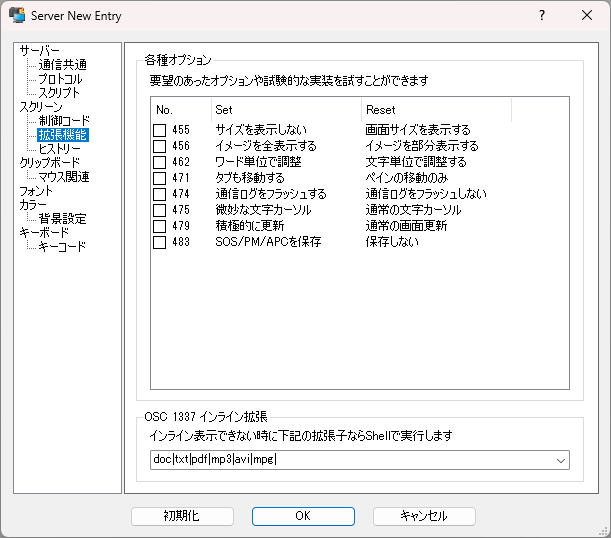
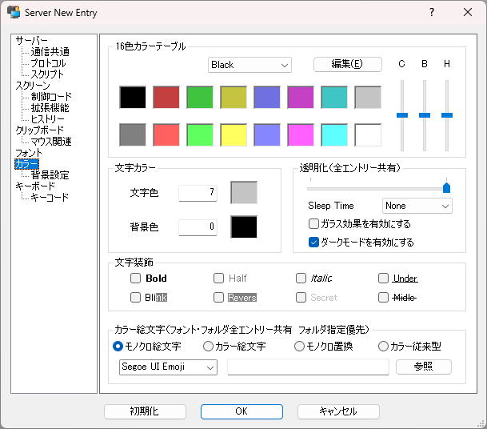
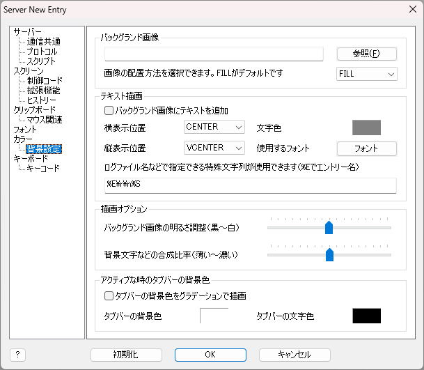
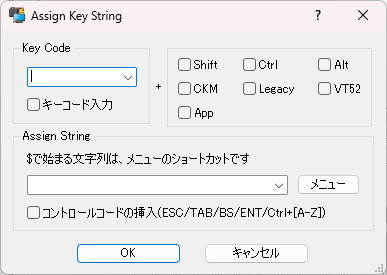
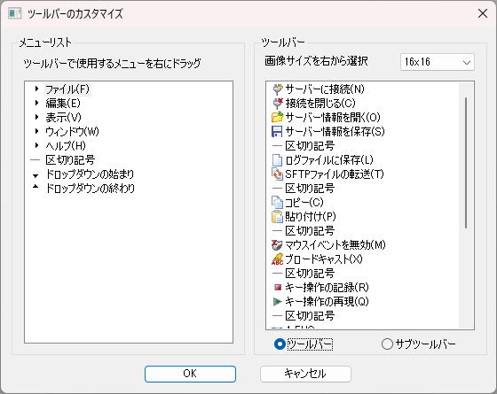

|
RLogin (2.26.6) |
2021/12/20 |
|
RLoginは、Windows上で動作するターミナルソフトです
プロトコルはrlogin,telnet,ssh(バージョン１と２)の3種類に対応し遠隔でのサーバーメンテナンスを考えて安全な暗号化通信をサポートしています
漢字コードは、EUC,SJIS,UTF-8などに対応しISO-2022によるバンク切り替えで様々な文字コードが表示できます
画面制御としてxtermに準じたエスケープシーケンスなどに対応しANSIやvt100コンソールとして使用する事ができます
|
 |
|
|
|
1.1 対応しているターミナルプロトコル
|
| rlogin |
通信に関してオーバーヘッドがありませんがセキュリティーの考えが無いに等しいです。このプロトコルは、安全なローカルネット（無線LANは無防備？）以外では、使用しないのが普通で、まったく盗聴、偽装などを防げません |
|
| telnet |
telnetプロトコルは、サーバーにて自動認証・暗号化以外での接続を禁止すればグローバルなネットでの使用でも比較的小さなオーバーヘッドで通信が可能だと思いますが、現在では、暗号化の方式などがかなり古いのでグローバルでは、使用しないほうが無難です |
| telnet |
| ユーザー認証 |
SRA |
| 暗号方式 |
DES_CFB64, DES_OFB64 |
|
| ssh 1/2 |
グローバルなネットで最も安全なのは、SSHプロトコルを使用しさらに公開鍵認証のみで接続するようsshサーバーで設定することです。ただし事前に公開鍵を作成してサーバー側に設定しなければ接続できないので自由度が低いですが、盗聴、偽装などが非常に困難です。またSSH2によるポートフォワードにも対応しておりpop3やsmtpなどの通信もSSH2上の安全な経路を通して通信させることが可能です。(*sshでもパスワード認証を許可しているとユーザーを騙ってパスワードを色々試しながら接続を試みるロボットソフトがあるようなので注意が必要です)
現在では、sshでもバージョン１での使用は、お勧め出来ません。sshのバージョン２は、今でも最新の暗号方式や認証鍵方式などの開発が続いておりグローバルなネットでsshと言えばsshバージョン２を示していると思います |
|
ssh |
| バージョン１ |
バージョン2 |
| 暗号方式 |
blowfish,
3des,
des |
3des-cbc/ctr blowfish-cbc/ctr
idea-cbc/ctr cast128-cbc/ctr
arcfour/128/256
aes128/192/256-cbc/ctr
twofish128/192/256-cbc/ctr
serpent128/192/256-cbc/ctr
camellia128/192/256-cbc/ctr
seed-cbc/ctr@ssh.com,
aes128/256-gcm@openssh.com,
chacha20-poly1305@openssh.com |
| 検証方法 |
crc |
hmac-md5(-96)
hmac-sha1(-96)
hmac-ripemd160
hmac-whirlpool
hmac-sha2-256/512
umac-32/64/96/128,
*-etm@openssh.com |
| 圧縮方式 |
zlib, none |
zlib,none,delay-zlib |
| 認証鍵 |
rsa1 |
ssh-rsa, ssh-dss,
ecdsa-sha2-*, ssh-ed25519 |
|
|
1.2 対応している漢字コード
|
|
サーバーが出力する漢字コード |
サーバーに送る漢字コード |
| EUC |
ISO-2022による文字バンク制御(GR/GL,G0,G1,G2,G3)にる2バイト文字表示を行います |
EUC漢字に変換して出力します |
| SJIS |
SHIFT-JISによる漢字コードをその時点での文字バンク2/3に変換します |
SHIFT-JIS漢字で出力します |
| ASCII |
EUCと同じですが、デフォルトの文字セットが英語になります |
ISO-2022-JPに変換して出力します |
| UTF-8 |
UTF-8文字をUTF-16で表示します。ただしU+0000～U+00FFはG0,G1バンクの文字に変換します |
UTF-8に変換して出力します |
プログラム内部では、文字バンクにしたがったコードからFonts Setで設定されたIconvセットにてUTF-16に変換して表示します。クリップボードやキーボード入力による漢字は、オプション設定の"Iconv
Character Set"にしたがってUNICODEから変換して送り出します |
 |
|
1.3 インストールおよびアンインストール
|
動作環境としてWindows XP x32/Windows 7 x64/Windows 10 x64にて確認しています
サーバーは、FreeBSD 11.3のrlogind, telnetd, sshd(openssh-8.2p1)を使用しています
「rlogin.zip」を解凍してRLogin.exeを適当な場所に置いて実行してください
レジストリは、”HKEY_CURRENT_USER\Software\Culti\RLogin”を使用します。アンイストールする場合は、このレジストリを削除してください
RLogin起動時の作業フォルダ、RLogin.exeがあるフォルダに下記のファイルやフォルダがあると各種設定などが変更されます
現在nanno.dip.jpがアクセス出来ない状態が続いています
実行プログラムのダウンロードなどは、GitHubから可能です |
|
|
|
|
1.4 プログラム・ヒストリー
|
最新のバージョンを確認する場合には、必ずブラウザの最新の情報に更新を行うようにしてください
| 2021/12/20 |
2.26.6 |
sshのkex回りのコードを整理しrsa2048-sha256などを試験実装
オプション・カラーの16色セットWindowsをCampbellに変更してOne Halfを追加
vs2022でもコンパイル出来るように一部ソースコードを変更
認証キーの設定のエクスポートでファイル形式を選択できるように変更
オプション・プロトコルのDNSでホスト鍵をチェック「しない」を「する」に変更
openssl-1.1.1mに更新 |
| 2021/11/29 |
2.26.5 |
ファイルオープン時の共有モードを全体的に見直して修正
rsa-sha2-xxxの名前が拡張されていないバグを修正
メニュー・表示を各種ウィンドウでまとめるように変更
不完全な全角文字を半角で表示するように変更
リソース内ビットマップをその時のDPIで調整するように変更
sntrup761x25519-sha512@openssh.comに変更
opensslのed25519/ed448鍵の読み込みに対応
curve25519/ed25519関連をopensslに変更しcurve448/ed448に対応 |
| 2021/10/29 |
2.26.4 |
scriptにシリアル制御(comset/comdtr/comrts)の関数を追加
メニュー・表示に音声合成設定のボイスバーを追加
メニューショートカット文字列設定のバグを修正
scriptファイル読み込み時のエラーをメッセージで表示に変更 |
| 2021/08/27 |
2.26.3 |
openssl-1.1.1lに更新 |
| 2021/06/28 |
2.26.2 |
文字色セットにCUD（カラーユニバーサルデザイン）を追加
メニュー・ヘルプに登録されたホスト鍵の削除を追加
ホスト鍵の確認で公開鍵を保存しない場合の処理を変更
Server Celectダイアログのポップアップにすべてファイルに保存を追加 |
| すべてのプログラム・ヒストリー |
|
1.5 ソースのコンパイルについて
|
ソースをコンパイルするには、以下のライブラリが必要です
openssl-1.1.1m.tar.gz
perl,nasmの実行環境が必要 |
x86用 out32
Visual Studio コマンド
プロンプト (2010)
※crypto\rand\rand_win.c
_WIN32_WINNT=0x0501 |
rename openssl-1.1.1l openssl-1.1.1l-x32
perl Configure VC-WIN32 no-shared
nmake |
x64用 out64
Visual Studio x64 Win64
コマンド プロンプト (2010) |
perl Configure VC-WIN64A no-shared
nmake |
| zlib-1.2.11.tar.gz |
x86用 x32
Visual Studio コマンド
プロンプト (2010) |
nmake -f win32/Makefile.msc CFLAGS="/MT /Ox /Ob2 /Oi /Ot /GS- /Gy
-W1 /nologo -Fdzlib"
mkdir x32
mv *.obj *.lib x32 |
x64用 x64
Visual Studio x64 Win64
コマンド プロンプト (2010) |
nmake -f win32/Makefile.msc AS="ml64" CFLAGS="/MT /Ox /Ob2
/Oi /Ot /GS- /Gy -W1 /nologo -Fdzlib -DASMV -DASMINF -I." OBJA="inffasx64.obj
gvmat64.obj inffas8664.obj"
mkdir x64
mv *.obj *.lib x64 |
libiconv-1.16.tar.gz
日本語パッチの一部を1.16に当て直した物です
libiconv-1.16.patch |
x86用 lib\x32
Visual Studio コマンド
プロンプト (2010) |
cd libiconv-1.16/lib
nmake -f Makefile.ms x32 |
x64用 lib\x64
Visual Studio x64 Win64
コマンド プロンプト (2010) |
cd libiconv-1.16/lib
nmake -f Makefile.ms x64 |
nettle-2.0.tar.gz
上記より抜粋して加工
nettle-2.0.zip |
stdafx.h内の
#define USE_NETTLE
を有効にする
|
macro.h
twofish.h
twofish.cpp
serpent.h
serpent_sboxes.h
serpent.cpp |
|
|
1.6 使用しているライブラリなど
|
|
OpenSSL 1.1.1m 14 Dec 2021
Copyright (c) 1998-2021 The OpenSSL Project
Copyright (c) 1995-1998 Eric A. Young, Tim J. Hudson
All rights reserved.
zlib 1.2.11
(C) 1995-2017 Jean-loup Gailly and Mark Adler
libiconv-1.16
Copyright (C) 2000-2017 Free Software Foundation, Inc.
Nettle library (version 2.0)
Originally written 2001 by Niels Moller, updated 2009.
(twofish/serpentのみ使用)
kumaGIF
Copyright (c) 1.023world All Rights Reserved.
http://1023world.net/
◇◇参照したプログラムソース◇◇
FreeBSD 5.2.1-RELEASE
Copyright (c) 1980, 1983, 1986, 1988, 1990, 1991, 1993, 1994
The Regents of the University of California. All rights reserved.
rlogin, rlogind, telnet, telnetd, ssh, sshd
|
|
1.7 RLoginの使用に関して
|
|
|
2.1 メニューの説明
|
| ファイル(F) |
|
サーバーに接続(N) |
サーバーの選択・設定ダイアログを表示し選択したサーバーに接続します |
|
$FILE_NEW |
| サーバーに再接続(A) |
通信関連のオプション設定の「接続が切れても閉じない」が有効の接続が切れたウィンドウの場合に追加されるメニューです |
|
$FILE_RECONNECT |
| 接続を閉じる(C) |
接続中のサーバーとの通信を閉じます |
|
$FILE_CLOSE |
| サーバー情報を開く(O) |
保存されたサーバー情報を元にサーバーに接続します |
|
$FILE_OPEN |
| サーバー情報を保存(S) |
接続中のサーバー設定などをファイルに保存します |
|
$FILE_SAVE |
| すべての状態を保存(W) |
ウインドウの分割状態、サーバーへの接続情報を含めてファイルに保存します |
|
$FILE_ALLSAVE |
| 印刷(P) |
現在の画面を印刷します |
|
$PRINT_DIRECT |
| 印刷プレビュー(V) |
印刷をプレビューで表示します |
|
$PRINT_PREVIEW |
| プリンタの設定(R) |
使用するプリンタを設定します |
|
$PRINT_SETUP |
| ログファイルに保存(L) |
指定するファイルに通信記録を残します |
|
$LOG_OPEN |
| SFTPファイルの転送(T) |
SFTPによるファイル転送ダイアログを開きます |
|
$VIEW_SFTP |
| XYZModemファイル転送(F) |
XYZModem/Kermitプロトコルによるファイル転送を実行します
※2.24.9からファイルアップ・ダウンロードで文字変換や送信遅延の処理を選択できるようにしました（ファイルのアップ・ダウンロード） |
|
$XMODEM_DOWNLOAD
$XMODEM_UPLOAD
$YMODEM_DOWNLOAD
$YMODEM_UPLOAD
$ZMODEM_DOWNLOAD
$ZMODEM_UPLOAD
$KERMIT_DOWNLOAD
$KERMIT_UPLOAD
$FILE_UPLOAD
$FILE_DOWNLOAD |
| スクリプトの実行(E) |
スクリプトファイルを読み込んで実行します |
|
$SCRIPT_EXEC |
| アプリケーションの終了(X) |
プログラムを終了します |
|
$EXIT |
|
|
| 編集(E) |
|
コピー(C) |
クリップボードにコピーします |
|
$EDIT_COPY |
| 貼り付け(P) |
クリップボードのテキストを送信します |
|
$EDIT_PASTE |
| すべて選択/コピー |
ヒストリーを含めてすべてをクリップボードにコピーします |
|
$EDIT_COPYALL |
| クリップボードチェイン有効 |
クリップボードの更新をチェックして自動で取得する機能を有効・無効にします
※これは、sshのポートフォワードでリモートデスクトップの通信などを行った場合などにデッドロックする問題や意図せぬ障害などに暫定的に対応する為の物です |
|
$CLIPBOARD_CHAIN |
| クリップボード(B) |
クリップボードにテキストがコピーされると（クリップボードチェイン動作時）このサブメニューに追加されます
※クリップボードチェインが働かない場合はペースト時に追加されます。（チェインの動作確認は、自身がコピーした時に行ないます） |
Alt+V |
$CLIPBOARD |
| 検索マーク(K) |
範囲選択した文字列を検索結果と同じ扱いにして前後検索で移動できるように反転表示します |
|
$EDIT_MARK |
| 文字列を検索(F) |
正規表現などで文字列を検索し反転表示します |
|
$SEARCH_REG |
前を検索(D)
次を検索(N) |
上記検索結果を次の位置まで移動します |
Ctrl+PRIOR
Ctrl+NEXT |
$SEARCH_NEXT
$SEARCH_BACK |
| スクリプトの停止(S) |
実行中のChatScript/スクリプトを終了させます |
|
$SCRIPT_END |
| Break信号を送る(B) |
COMポートの場合、ブレーク信号を送ります |
|
$BREAK |
| マウスイベントを無効(M) |
マウス・イベント・トラック・モードを一時的に無効にします |
|
$MOUSE_EVENT |
| 音声で読み上げ(Y) |
現在表示中の画面を音声合成で読み上げます |
|
$SPEAK_ALL
$SPEAK_BACK
$SPEAK_NEXT |
| ブロードキャスト(A) |
開いているすべての接続にキー操作を同時送信します。使い方を間違うと意図しない結果になりますのでご注意ください
※2.22.3からブロードキャスト時にタブバーにチェックボックスを表示して同時受信の一時的な拒否を設定出来るようにしました。オプション設定・通信共通・ブロードキャストで同時受信を拒否している場合は無効です |
|
$BROADCAST |
| 別のRLoginへも送信(O) |
別に起動したRLoginへも同時送信を行います |
|
$OTHERCAST |
| 見えてるだけに制限(L) |
重なったウィンドウの場合に見えないウィンドウには同時送信しません |
|
$LOOKCAST |
| キー操作の記録(R) |
以降のキー入力など再度このメニューを選択するまで記録します |
|
$KEY_REC |
| キー操作の再現(Q) |
最後に記録、再現されたキー操作を再現します |
|
$KEY_PLAY |
| キー操作のヒストリ(H) |
記録されたキー操作を最大５つまでここに表示され選択すれば再現します |
|
$KEY_HIS1-5 |
|
|
| 表示(V) |
| |
メニューバー(M) |
メニューバーを表示・非表示にします
※非表示の時は、システムメニューでメニューバーを表示できます |
|
$VIEW_MENUBAR |
| ツールバー(T) |
ツールバーを表示・非表示にします |
|
$VIEW_TOOLBAR |
| クィックバー(Q) |
クィックバーを表示・非表示にします
指定したエントリーを用いてホスト・ポート・ユーザー・パスワードを変更して接続を行います |
|
$VIEW_QUICKBAR |
| ボイスバー(A) |
音声合成で読み上げるボイスやスピードを設定します |
|
$VIEW_VOICEBAR |
| タブバー(B) |
タブバーを常時表示・２つ以上なら表示を切り替えます |
|
$VIEW_TABBAR |
| ダイアログバー(D) |
トレースウィンドウとコマンドヒストリーをメインウィンドウ下部に統合して表示することができます |
|
$VIEW_DIALOGBAR |
| ステータスバー(S) |
ステータスバーを表示・非表示にします |
|
$VIEW_STATUSBAR |
| スクロールバー(V) |
スクロールバーを表示・非表示にします |
|
$VIEW_SCROLLBAR |
| 各種ウィンドウ(W) |
|
Tekウインドウ(K) |
Tek40xx/41xxウインドウを表示・非表示にします |
|
$VIEW_TEKDISP |
| Imageウィンドウ(I) |
コンソール画面をグラフィックイメージでウィンドウに表示します |
|
$VIEW_IMAGEDISP |
| ソケットステータス(X) |
接続しているソケットの状態を表示します（デバッグ目的です） |
|
$VIEW_SOCKET |
| シリアルモニター(Z) |
プロトコルでcomを使用した場合にシリアルモニターを表示します |
|
$VIEW_MONITOR |
| トレースウィンドウ(W) |
トレースウィンドウでESCシーケンスなどのログを表示します |
|
$VIEW_TRACEDISP |
コマンドウィンドウ(I)
ヒストリーウィンドウ(H) |
iTerm2のShell Integrationをインストールするとコマンドの履歴をコマンドウィンドウ・ヒストリーウィンドウに表示することが出来ます |
|
$VIEW_CMDHIS
$VIEW_HISTORY |
| おさかなを飼う(O) |
おさかなを数匹飼います |
|
$VIEW_JOKE |
| オプション設定(P) |
各種のオプション設定を行います |
|
$OPTION_SET |
| 標準の設定に戻す(Y) |
オプション設定を下記の標準に設定した時の状態に戻します |
|
$OPTION_LOAD |
| タイトルの変更(E) |
ウィンドウやタブに表示するタイトルを一時的に変更します。「すべての状態を保存」以外では、この変更は、保存されません |
|
$TITLE_EDIT |
| 漢字コードの変更(C) |
EUC,SJIS,ASCII,UTF8の漢字コードに一時的に変更します
※オプションやこの変更で漢字コードを変更しても次回起動時にはサーバーエントリーで設定された漢字コードが有効になります |
|
$KANJI_EUC
$KANJI_SJIS
$KANJI_ASCII
$KANJI_UTF8 |
| リセット(C) |
| |
タブリセット |
タブの設定をデフォルト８文字に設定します |
|
$RESET_TAB |
| 文字バンクリセット |
文字バンクの設定を初期値に設定します |
|
$RESET_BANK |
| 文字属性リセット |
文字属性や色を初期値に設定します |
|
$RESET_ATTR |
| ESCシーケンスリセット |
ESCシーケンス中の処理を中断します |
|
$RESET_ESC |
| マウスイベントリセット |
マウスイベントを取り消します |
|
$RESET_MOUSE |
| tek40/41xxリセット |
tekウインドウの状態をクリアし初期化します |
|
$RESET_TEK |
| スクリーンリセット |
文字属性などを初期値に戻し画面をクリアします |
|
$RESET_SCREEN |
| サイズ固定リセット |
サイズ設定シーケンスによるスクリーンサイズ固定を解除します |
|
$RESET_SIZE |
| すべてリセット |
すべてを初期値に戻しヒストリーも含めて画面をクリアします |
|
$RESET_ALL |
|
|
| ウィンドウ(W) |
| |
ウィンドウ識別を表示(I) |
タブ位置とウィンドウタイトルを画面中央に３秒間表示します |
|
$WINDOW_INDEX |
| 別ウィンドウを開く(N) |
接続中のウィンドウを新たに別ウィンドウで表示します |
|
$WINDOW_NEW |
| ウィンドウを閉じる(C) |
アクティブなウィンドウを閉じます |
|
$WINDOW_CLOSE |
| スプリットコマンド(S) |
| |
縦方向に分割して接続(H) |
縦に２分割して現在の接続先に接続します |
Ctrl+DOWN |
$SPLIT_HEIGHT |
| 横方向に分割して接続(W) |
横に２分割して現在の接続先に接続します |
Ctrl+RIGHT |
$SPLIT_WIDTH |
| 画面分割なしで接続(O) |
画面を重ねて現在の接続先に接続します |
Ctrl+LEFT |
$SPLIT_OVER |
| 縦方向に分割して新規接続(A) |
縦に２分割しサーバー選択をして接続します |
Ctrl+Shift+DOWN |
$SPLIT_HEIGHTNEW |
| 横方向に分割して新規接続(B) |
横に２分割しサーバー選択をして接続します |
Ctrl+Shift+RIGHT |
$SPLIT_WIDTHNEW |
| ペインの移動(R) |
すべての接続しているウィンドウを移動させます |
Crl+UP |
$PANE_ROTATION |
| 次のウィンドウに移動(N) |
アクティブなウィンドウを移動します |
Ctrl+TAB |
$PANE_NEXT |
| 前のウィンドウに移動(P) |
アクティブなウィンドウを移動します |
Ctrl+Shift+TAB |
$PANE_PREV |
| 上のウィンドウに移動(U) |
アクティブなウィンドウを移動します |
Alt+UP |
$PANE_UP |
| 下のウィンドウに移動(D) |
アクティブなウィンドウを移動します |
Alt+DOWN |
$PANE_DOWN |
| 右のウィンドウに移動(R) |
アクティブなウィンドウを移動します |
Alt+RIGHT |
$PANE_RIGHT |
| 左のウィンドウに移動(L) |
アクティブなウィンドウを移動します |
Alt+LEFT |
$PANE_LEFT |
| 縦方向に分割(H) |
アクティブなウィンドウを縦方向に2分割します。空いた場所は、次にオープンするウィンドウ（上記「別ウィンドウを開く」もしくは「サーバーに接続」にて開くウィンドウ）に予約されます |
|
$PANE_HSPLIT |
| 横方向に分割(W) |
上記と同じですが分割を横方向に行います |
|
$PANE_WSPLIT |
| 分割を閉じる(X) |
分割されたウィンドウを元に戻します。片方が空の場合は、閉じられ。空で無い場合は、重なります |
|
$PANE_DELETE |
| 重ねて表示(O) |
すべてのウィンドウを最大表示サイズで重ねて表示し、空のウィンドウは、閉じます |
Ctrl+Shift+LEFT |
$PANE_CASCADE |
| 並べて表示(T) |
空でないすべてのウィンドウを横縦方向に並べて整列させます |
Ctrl+Shift+UP |
$PANE_TILEHORZ |
| 現在の分割を保存(Z) |
その時点での画面分割状態を保存し次回起動時にその状態で復帰させます |
|
$PANE_SAVE |
|
|
| ヘルプ(H) |
| |
RLoginのバージョン情報(A) |
プログラムやライブラリなどのバージョン情報を表示します |
|
$ABOUT |
| 自動バージョンチェック(V) |
RLogin起動時に定期的に新バージョンのチェックを行うようにします |
|
$VERSION_CHECK |
| 既定のアプリへ登録を行う(X) |
Windowsの設定・アプリ・既定のアプリにRLoginを登録して管理します
※ファイルの種類として".rlg"との関連付け、プロトコルとしてssh telnet loginを設定することができます（プロトコルハンドラは、サーバーの選択・設定で個別のエントリーと関連付けを行って作成する必要があります）。また、このメニューのチェックを外すとすべての関連付け及び既定のアプリでの管理を行うレジストリの設定を削除します |
|
$REGISTRY_HANDLE |
| セキュリティポリシーの設定(S) |
エントリー情報で保存するパスワードの暗号化に使用するキーワードを選択します。変更は、次回起動時から有効になり、すべてのエントリーのパスワードは、削除されます。すべてのパスワードを再設定する必要がありますのでご注意ください。また、どの設定でもセキュリティにそれなりの問題がありますので下記のパスワードロックとの併用をお薦めいたします |
|
$SECURITYCOLICY |
| ダイアログフォントの設定(D) |
オプション設定などのダイアログで使用するフォントとサイズを設定します
参照：「ダイアログフォントを変更する」 |
|
$DIALOG_FONT |
| ツールバーをカスタマイズ(T) |
ツールバーをカスタマイズしメニューから追加・削除などを行います。また、ツールバーアイコンも変更・追加することができます |
|
$CUSTOM_TOOLBAR |
| タブバーをマルチラインで表示(M) |
タブバーをボタンスタイルで複数行で表示するようにします |
|
$TAB_MULTILINE |
| プライベートプロファイル作成(P) |
プライベートプロファイル(RLogin.ini)をレジストリからコピーして新規作成します
※プライベートプロファイルは、レジストリベースのプロファイルのバックアップには、なりません。プライベートからレジストリには戻せません。また、条件によりパスワードなどの情報は、消去されます |
|
$PROFILE_SAVE |
| レジストリをファイルに保存(B) |
RLoginで使用しているレジストリ（すべての設定）を年月日を付けてファイルに保存します。レジストリを元に戻すには、保存したregファイルを実行してください。すべての設定のバックアップを目的としています |
|
$REGISTRY_SAVE |
| リソースをファイルに保存(R) |
リソースを編集可能なテキストでファイルに保存します。実行時の作業フォルダもしくは、RLogin.exeと同じフォルダにRLogin_rc.txtで保存すると次回起動時に読み込みます
参照：「リソースをファイルに保存」
※変更した場合に不都合が起きる可能性があります。文字列の変更程度です。また変更できないリソースもあります
※RLogin_rc.txtは、バージョンに依存します |
|
$RESOURCE_SAVE |
| 登録されたホスト鍵の削除(H) |
SSHサーバーの登録された信頼するホスト鍵を削除します |
|
$KNOWNHOST_DELETE |
| パスワードロック(K) |
パスワードによるRLogin起動の制限を行います
※ロックを解除した場合に各接続のパスワードが削除される場合があります |
|
$PASSLOCK |
| 古いエントリー情報を削除 |
2.22.0からレジストリに保存する文字列をUnicodeに変更しました。下位互換が無くなる為に古いエントリー情報を保存しています。必要がないと判断された場合に古いエントリー情報をここで削除することができます |
|
|
|
※右端の＄から始まるキーワードは、キーボードのオプション設定などで使用するショートカットキーワードです
| その他ショートカットメニュー |
|
スクリプトメニュー |
スクリプトで設定するメニューです |
|
$SCRIPT_MENU1-10 |
| アクティブウィンドウの選択 |
タブで表示されている各ウィンドウを左から数えてアクティブにします |
Ctrl+1,0 |
$PANE_SEL1-10 |
| クリップボードの貼り付け |
クリップボードに記録されているテキストを貼り付けます |
|
$CLIPBOARD_HIS1-10 |
| クィックバーの接続ボタン |
クィックバーによる接続を行います |
|
$QUICK_CONNECT |
|
2.2 コマンドラインでのオプション
|
| RLogin [<RLogin File Name>] [/ip <addr>] [/port <port>]
[/user <user name>] [/pass <password>] [/term <term>]
[/entry <entry name>] [/direct | /login | /telnet | /ssh] [/inuse]
[/inpane] [/nothing] [/req] |
| <RLogin File Name> |
「サーバー情報を保存」で保存したファイルを指定
URL形式([login|telnet|ssh]://user:pass@host:port/file)の場合は、それを解釈する
sshの場合にfileが指定されていれば、そのファイルのダウンロードのみ行う |
| /ip <IP Address> |
サーバーのIPアドレスを指定 |
| /port <Port Number> |
IPのポート番号を指定 |
| /user <User Name> |
ログインユーザー名を指定 |
| /pass <Password> |
ログインパスワードを指定 |
| /term <Terminal Name> |
接続先のTERM環境変数を指定 |
| /entry <Entry Name> |
サーバー選択で登録したエントリーの設定で接続 |
| /direct |
プロトコル制御なしでダイレクトに接続 |
| /login |
rloginプロトコルで接続 |
| /telnet |
telnetプロトコルで接続 |
| /ssh |
sshプロトコルで接続 |
| /inuse |
すでに起動中のRLoginがあれば、そのウインドウのタブとしてオープンします |
| /inusea |
上記の/inuseに最小化したRLoginも対象にします |
| /inpane |
接続を終了時にウィンドウを閉じます |
| /nothing |
サーバー選択ダイアログを表示せずに起動します |
| /sx <横座標> /sy <縦座標> |
スクリーン座標で表示位置を指定。横座標は、ウィンドウの中心になります |
| /cx <横サイズ> /cy <縦サイズ> |
メインウィンドウのサイズを指定 |
| /title <Title> |
タブやウィンドウのタイトルを指定 |
| /script <Script File> |
スクリプトファイルを指定 |
| /req |
サーバーアドレス・ユーザー名・パスワードの入力ダイアログを接続時に表示 |
| /idkey <IdKey File Name> |
sshで使用する認証鍵ファイルを指定 |
| /file <File Name> |
sshの場合にサーバー側のファイルを指定するとダウンロードのみ行う |
|
| ※CygwinのCygTermでは、「cygterm.cfg」で「TERM = RLogin.exe /telnet /ip %s /port
%d /user xxx /pass xxx /term vt100」で接続できると思いますが、未確認です |
|
2.3 各種ウィンドウの操作
|
「ファイル」「サーバーに接続」もしくは「サーバー情報を開く」にて開いたウィンドウ
基本となるウィンドウです。メインウィンドウがすでに分割してある場合は、アクティブな空ウィンドウ＞最初の空ウィンドウ＞アクティブなウィンドウと同じ位置で重ねる。の順位で開かれます。メインウィンドウが分割されていなければ、全画面で開き、複数の接続がある場合は、それぞれのエントリー名でタブバーを表示します |
 |
「ウィンドウ」「別ウィンドウを開く」で開いたウィンドウ
基本的に上記のウィンドウと同じですが、接続先が同一の複写されたウィンドウです。下記の分割ウィンドウとの違いは、画面サイズ（サーバー側に報告する縦、横の文字数）がこのウィンドウのサイズになり、アクティブなウィンドウが切り替わる度にサーバーに画面サイズを報告し直します |
 |
各ウィンドウ右端スクロールバー上部の分割バーをドラックして分割したウィンドウ
上下２つに分割されたそれぞれのウィンドウは、同じ接続で同じ画面サイズの複写ウィンドウとなりなす。実画面サイズ（サーバー側に報告する縦、横の文字数）は、表示上のサイズでは、なく分割された元ウィンドウのサイズのままで維持します。したがって実画面の一部分を２つのウィンドウで独立して表示することになります。フォーカスのある画面で文字入力や画面更新があるとカーソル位置に基づいて表示位置が動的に変化します。過去のヒストリー画面をちょっと見ながら文字入力をしたい場合などに有効です |
 |
タブバー上にマウスを2秒以上置くと表示されるウィンドウ
アクティブでない接続のタブバーの上にマウスカーソルを2秒以上置くとその接続の現在の画面を重ねて透過表示します。２つの画面をグラフィカルに見比べる事ができます
この機能は、以下のレジストリを設定することで抑制できます
[HKEY_CURRENT_USER\Software\Culti\RLogin\TabBar]
"GhostWnd"=dword:1 |
 |
タブバーのタブをドラッグして移動
| タブバー内で移動 |
白 |
タブの表示位置を移動します |
| ウィンドウに移動 |
白 |
移動先のウィンドウと入れ替わります |
| ウィンドウ外に移動 |
赤 |
ファイルベースの設定で接続したウィンドウを空のRLoginを起動し接続設定を送って開きます
その接続の現在のオプション設定を引き継ぎます |
| 黄 |
レジストリベースのエントリーで接続したウィンドウをコマンドライン指定でRLoginを起動します
その接続の現在のオプション設定を引き継ぎません |
| 別のRLoginに移動 |
緑 |
ファイルベースの設定で接続したウィンドウを移動先のRLoginに同じ接続設定を送って開きます
その接続の現在のオプション設定を引き継ぎます |
| 青 |
レジストリベースのエントリーで接続したウィンドウを移動先のRLoginにコマンドライン指定で開きます
その接続の現在のオプション設定を引き継ぎません |
|
 |
|
2.4 サーバーの選択・設定
|
| Server Select |
| OK |
接続を開始します |
| キャンセル |
このダイアログを閉じます |
| 新規 |
新しくサーバーエントリーを作成します |
| 編集 |
サーバーエントリーを変更します
※複数選択時は、変更された差分データを作成して適用します。期待と違う動作の場合がありますのでご注意ください |
| 削除 |
サーバーエントリーを削除します |
| エントリーリスト内での右クリックによるポップアップメニュー |
| 接続先を新規作成 |
新しくサーバーエントリーを作成します |
| 接続先を編集する |
サーバーエントリーを変更します |
| 接続先を削除する |
サーバーエントリーを削除します |
| 接続先を複写する |
同じ設定のエントリーを新規作成します |
| クリップボードに… |
エントリー情報をテキスト形式でクリップボードにコピーします |
| クリップボードから… |
クリップボードからエントリー情報を読み込み新規作成します |
| 標準の設定にする |
初期化で選択する標準の設定にします |
| 標準の設定に戻す |
設定を標準の設定などに初期化します |
| プロトコルハンドラ… |
ssh://hostnameなどのURLリンクで起動・接続できるようにプロトコルハンドラを登録する。既定のアプリに登録されていない場合は、登録を確認します |
| ショートカットを作成 |
ディスクトップに接続のショートカットを作成します |
| ファイルから設定変更 |
エクスポートしたファイルから設定を読み込みます
下記インポートとの違いは、既存のエントリーの部分的な変更を行います |
| ファイルからインポート |
エクスポートしたファイルから設定を新規作成します |
| ファイルにエクスポート |
ファイルに設定を保存します。ファイルは、テキスト形式ですのでメモ帳などで編集可能です |
| すべてファイルに保存 |
すべてのエントリー情報を１つのファイルに保存します |
| 最新の情報に更新 |
エントリーを再表示します |
| タブやツリー内での右クリックによるポップアップメニュー |
| 新しいグループを作成 |
新しくグループを作成し名前の編集状態になります。ツリーでグループ選択時には、子グループを作成します |
| グループの名前を変更 |
グループの名前を変更します。編集時に「￥」区切りで子グループを直接編集することが出来ます |
| 空のグループを削除 |
エントリーが空のグループのみ削除する事が出来ます |
| エントリーをすべて選択 |
グループ内のエントリーすべてを選択状態にします |
|

サーバーのオプション設定のタブグループの名前を設定すると分類ができます

タブグループを「￥」で区切ると階層化してツリー表示に変更します

選択中のタブやツリーをクリックするとグループ名の編集ができます
また、リストのエントリーをドラッグしてタブやツリーにドロップすると
グループを変更することができます

Last(最終アクセス日時)/Index(任意順位、Ctrl+UP/DOWNでエントリー移動)は、
リストのヘッダーでデフォルトサイズ０で隠しています
必要に応じてサイズ変更してください
|
|
2.5 ペースト確認の操作
|
| ペースト確認 |
タブコード
改行コード
その他コード |
テキストに含まれるそれぞれの制御コードの個数を表示しています。横のボタンでスペースに変換することができます |
| 行単位で送信遅延… |
通信共通の設定の行単位で送信遅延の設定を使ってペーストします。多くのテキストを一度に送信すると正しく受信されない場合などにこれをチェックしてください |
| 編集後クリップ… |
テキストを編集した場合に編集後のテキストをクリップボードにコピーします |
| 次回から確認… |
このダイアログを表示しないようにします |
| … |
ペーストされるテキストを事前に編集することが出来ます。改行が含まれる場合に直接shellに渡す前に確認することで誤動作などを修正することができます |
| コントロールコード… |
コントロールコードを%xxの形式（「%」は「%%」で表現）で表示しCtrl+A-Zのキー入力で挿入するようにします。編集で使用するCtrl+Zでアンドゥなどが動作しなくなるので注意してください |
| Escape |
範囲指定したテキストをシェルの引数用にエスケープ処理します |
| １行送信 |
範囲指定されたテキストを送信し次行を範囲指定します。範囲指定されていない場合は、カーソル位置の行頭・行末を範囲指定だけ行います。シェルに複数のコマンドを送る場合などに動作を確認することができ上記の行単位で送信遅延するより確実です |
| すべて送信 |
上記テキストをすべて送信して閉じます |
| キャンセル |
編集および送信をキャンセルします |
|
 |
|
2.6 ファイルのアップ・ダウンロード
|
| 変換処理 |
| 文字…を行わない |
文字コードの変換（下記の改行コードを変換を省く）やエンコード処理を行わないでファイルを送信します |
| 文字コードの… |
漢字などの文字コードを変換します。日本語のWindowsでは、デフォルトCP932(SHIFT-JIS)だと思います |
| エンコード処理… |
バイナリファイルなどの場合にuuencodeやbase64でコード変換して送信します。サーバー側でuudecodeなどで処理すれば元のファイルに変換することが出来ます |
| 改行コードを… |
サーバー側のファイルの改行コードを指定することが出来ます |
| 送信処理 |
| 送信…を行わない |
送信遅延を行わないでデータを送信します。データの取りこぼしなどが発生する場合がありますのでご注意ください |
| 指定サイズ… |
指定された一定のサイズ(byte)で送信を中断し一定時間(ms)待って次を送信します |
| 行単位で送信… |
行単位で送信を行い、送信文字数ｘ文字単位(ms)＋行単位(ms)を最大値待ち時間として次を送信します。文字単位のみ小数点以下３桁まで指定できますが内部でusに変換し最大値の計算ではmsで切り捨てられます |
| 受信が一定時間… |
行単位で送信遅延している間に最後に受信した文字がら指定時間(ms)受信が無い場合に最大待ち時間以内であっても次を送信します |
| 改行を確認… |
行単位で送信遅延している間に改行文字<CR>を受信すると最大待ち時間以内であっても指定した時間(msec)待って次を送信します |
| XON/XOFF… |
送信中に受信したXON/XOFF文字でフロー制御を行います |
| 送信中に受信… |
送信中に受信した文字をコンソールにも送り表示を行うようにします |
|

 |
| 受信処理 |
| 文字…を行わない |
受信した文字をコード変換（下記の改行コードを変換を省く）やデコード処理なしでファイルに保存します |
| 文字コードの… |
受信した文字をコード変換してファイルに保存します |
| デコード処理… |
uuencodeやbase64で処理されたデータを復元してファイルに保存します。base64は、最初と最後が判らないのでご注意ください |
| 改行コードを… |
ファイルに保存する改行コードを指定した物に変換します |
| 指定時間… |
一定時間(sec)受信が無いとファイルダウンロードを終了します |
| 受信した文字… |
受信した文字を（上記のコード変換や改行コード変換を行う前の文字です）コンソールにも送り表示を行うようにします。 |
|
 |
|
3.1 サーバーのオプション設定
|
| Server Parameter |
| エントリー/コメント |
| 上段 |
このエントリーを識別する名前をつけます |
| 下段 |
このダイアログ以外では、表示されないコメントです |
|
| タブ/前接続先 |
| 上段 |
サーバー選択画面で表示されるタブグループの名前を指定します。名前を「￥」区切りで階層化してタブグループを構成することができます。階層化した場合には、Server
Selectの画面は、タブの代わりにツリー表示に変更されます |
| 下段 |
このエントリーを接続する前に接続するエントリーを指定します。すでに接続されている場合は無視します。別エントリーのSSHポートフォワードを使用して接続する場合を想定してます |
|
| プロトコル |
通信制御する方式を選択します |
ホスト名
(サーバーIPアドレス) |
サーバーのIPアドレスを設定します
（空の場合は、接続時にホスト名入力を求めます）
ホスト名を','で区切って指定すると同じエントリー設定で複数接続します。また'[n-n]'で１０進数の範囲、'[x,x]'で部分置換できます
ホスト名に'-'などが含まれる場合は、"で名前を囲ってください
例
hostA.hostB,hostC
192.168.0.[1-5]
192.168.0.[1,3,5]
"1-2-3-4.com" |
シリアル
設定 |
プロトコルcomの場合にCOMの通信設定で指定した接続条件をホスト名の代わりに書き込みます |
| TCPポート |
使用するポート番号を設定します
※プロトコルとの関係が重要となります、通常は、Protocolと同じ名前になります。変更する場合は、数値で指定してください
※プロトコルcomの場合は、使用するCOMポートを設定します |
| ログインユーザー名 |
ユーザー認証に使用するユーザー名です
※2.23.4より送信文字列の特殊文字が利用できます |
ユーザー認証の…
パスワード
or
パスフレーズ |
パスワード認証やキーボードインタラクティブの場合に使用するパスワード。公開鍵認証の場合は、認証鍵のパスフレーズを設定します
User Name,Passwordを設定するとサーバー情報を保存で作成されるファイルや次回起動時用にPasswordなども保存されます。セキュリティーを考えるならPasswordを保存しないでください。保存しない場合は、下記のパスワード/フレーズ入力をチェックして接続時に入力するようにしてください |
| TERM |
接続先で使用するTERM環境変数を設定します |
| 環境変数 |
telnet,ssh2の時に追加で送信する環境変数を設定します |
| ホスト・ユーザー… |
接続時にホスト、ユーザー、パスワードの入力を要求します |
| その他オプションを… |
サーバーのオプション設定以外のすべてのオプションを接続時に標準の設定（右のボックスを空白）もしくは、別エントリー（右のボックスで指定）の物を使用するようにします。これを有効にするとその他のオプション設定は、変更できなくなり接続には使用されません
標準の設定は、サーバーの選択・設定の右クリックによるポップアップメニューで任意のエントリー設定を標準にすることができます。ただしこのオプションを有効にしたエントリーは標準に設定できません
接続中のオプション設定では、このオプションを変更することができません。サーバーの選択ダイアログのエントリー編集時のみ変更できます。また接続中のオプション変更は、終了時に保存確認の後、さらに上書きするか確認します。これは、元のエントリー設定がすべて置き換わるリスクを確認する為です |
| アイコン |
適当な小さい画像ファイルをタブにアイコンとして表示します。画像ファイルとしてgif/jpg/png/bmp/icoなどが使用できます。表示サイズは、16x16ですが拡大・縮小して表示します |
| チャットスクリプト |
接続後に簡単なキー入力の自動化ができます |
| プロキシ設定 |
プロキシーを利用して接続します |
| SSH認証鍵 |
このエントリーだけで使用するSSH2の認証鍵ファイル(ssh-keygenなどで作成）を指定します
※設定を削除するにはファイル名選択でキャンセルをクリックして削除の確認にて「はい」を選択してください
※2.23.4より送信文字列の特殊文字が利用できます
※参照：SSHでの公開鍵認証 |
| 文字セット |
文字セットを選択します（接続時のデフォルト値となります） |
|


Server Adress/User Nameは、履歴を残します。履歴を削除するには
プルダウンメニューで選択しDELキーで削除することができます |
| プロトコル |
| direct |
Socket Portで指定したPort番号にダイレクトにTCP/IP接続します。ちょっとしたデバックに使用します |
| login |
rloginプロトコルで接続します |
| telnet |
telnetプロトコルで接続します |
| ssh |
ssh1/ssh2プロトコルで接続します |
| com |
RS232CのCOM:ポートに接続します |
| pipe |
Server Addressの部分で指定したプログラムを標準入出力をパイプでつないで起動・実行します
CMD.EXEなどのプログラムを指定するとコマンドプロンプトのような使い方ができます。その場合は、通信オプションの「キーボード入力をローカルエディットモードにする」をチェックしないと文字入力できませんのでご注意ください。また漢字コードは、SJISにしないと漢字が化けます。あくまでパイプでつないで起動しているので本来のコマンドプロンプトとは、動作が違いますのでくれぐれもご注意ください
2.18.9よりServer Addressで名前付きパイプを指定出来るように変更しました。「\\.\pipe\<パイプ名>」で指定します |
|
|
|
3.1.1 COMの通信設定
|
| ポートの設定 |
| COM… |
接続に使用するCOMポートを変更することが出来ます |
| ビット/秒 |
110-921600 |
通信速度、bpsで表現されます
1変調=1bitで考えればbaud rateと同じ値です |
| データ ビット |
5/6/7/8 |
8bit未満の場合は、文字としてビットが欠落しますので注意が必要です（EUC/SJIS/UTF8が使用できません） |
| パリティ |
NOP/EVEN/ODD
MARK/SPC |
MARKは、常に1。SPACEは、常に0になります
パリティが一致しない場合は、通信履歴にパリティエラーとして記録されます |
| ストップ ビット |
1/1.5/2 |
スタート(1)+データ+パリティ+ストップでシリアルデータを構成します。これらの長さが一致しないとフレーミングエラーとして記録されます
細かな動作的には、1から2に変更すると1ビットの送信遅延と同じになります
例：1bit=1000ms/300bps=3ms |
| フロー制御 |
NOC/CTS/XON
USER=n |
通常使用するフロー制御の設定
| NONE |
フロー制御を行いません |
| CTS/RTS |
CTS入力で接続先のフロー制御
RTS出力で受信のフロー制御 |
| XON/XOFF |
XON/XOFF文字でフロー制御 |
| USER |
フロー制御ボタンで詳細を変更し上記の設定と異なる場合 |
|
| 文字の送信遅延 |
WC=n |
１文字単位で指定ミリ秒遅延してから次を送信します。実際の動作としては、送信が完了するタイミングをプログラム上で特定することは、出来ません。送信バッファに入れた時間から推定した時間の遅延になります。これは、9600bps以下の通信速度で影響されることになります
例：1000msec*(1+8+1)/300bps=33ms |
| 改行の送信遅延 |
WL=n |
改行文字(スクリーンのオプション設定の送信する改行コードの設定)の場合は、このミリ秒を使用します |
| 既定値 |
デバイスのプロパティで設定された既定値にすべての設定を戻します |
|
 |
| フロー制御の詳細 |
| DTR出力 |
| ALWAYS OFF |
常にOFF状態を維持します |
| ALWAYS ON |
常にON状態を維持します |
| FLOW CTRL |
受信バッファの状態でON/OFFを切り替えて
オーバーフロー制御を行います |
|
| DSR入力…送信停止 |
接続先のフロー制御で使用する為の送信停止を行います |
| DSR入力…受信無視 |
接続先の電源OFFやケーブルの取り外しなどで接続が不定の場合の通信エラーで受信したデータを放棄する効果を見込めます
また、DSR入力がOFFに変化した時に接続の切断処理を行うので自動で接続を閉じることができます |
| RTS出力 |
| ALWAYS OFF |
常にOFF状態を維持します |
| ALWAYS ON |
常にON状態を維持します |
| FLOW CTRL |
受信バッファの状態でON/OFFを切り替えて
オーバーフロー制御を行います |
| RECV ON |
受信バッファにデータがあるとOFF
受信バッファが空だとONになります |
|
| CTS入力…送信停止 |
接続先のフロー制御で使用する為の送信停止を行います |
| XOFF/XONの受信 |
接続先のフロー制御で使用する為のXOFF受信で送信停止
XON受信で送信の再開を行います |
| XOFF/XONの送信 |
受信バッファのが上限に達するとXOFFを送信します
受信バッファが下限以下になるとXONを送信します |
| XOFF送信後の送信 |
XOFFを送信した場合に接続先の負担軽減で送信を停止したほうが無難ですが、それを行わずに送信を継続するようにします |
| 受信バッファの上限 |
XOFFL=n |
受信バッファのフロー制御を行う上限値を50-90%で設定します。内部ではバッファサイズに換算しますので端数により設定値が変化する場合があります |
| 受信バッファの下限 |
XONL=n |
受信バッファのフロー制御を行う下限値を10-50%で設定します。設定値が変化する場合があります |
| XOFFの文字コード |
XOFFC=n |
XOFFの文字コードを10進数で指定します
19=CTRL+S(1/3) |
| XONの文字コード |
XONC=n |
XOFFの文字コードを10進数で指定します
17=CTRL+Q(1/1) |
|
 |
|
3.1.2 環境変数の設定
|
| 環境変数 |
| □ |
チェックマークのある設定のみ送信されます |
| Name |
追加登録する環境変数名です |
| Value |
環境変数の値です |
| TERMCAP |
下記のTERMCAP設定ダイアログで変数を編集できます |
※「TERM」は、各種プロトコルの中に送信する機能がありますのでチェックマークの有無に関係なく送られます
※telnet,ssh2のみ追加で環境変数を送信しますがサーバー側の設定で許可されている必要がありますのでご注意ください。(sshの場合は、sshd_configなどに"AcceptEnv
TERMCAP"などの設定が必要です)
※リスト内で右クリックするとメニューで各種編集機能が選択できます |
 |
| TermCap/Info |
| Entry |
TERMの名前になるTermcap/infoの名前でtermcap/infoの設定ファイルを読み込んだ場合は、エントリを選択します |
| TermCap |
termcapの設定ファイルを読み込みます |
| TermInfo |
terminfoの設定ファイルを読み込みます |
| List |
Valueの項目のみダブルクリックで編集することができます |
※リスト内で右クリックするとメニューでそのエントリーをTermcap/infoそれぞれの形式で「ファイルからインポート・エクスポート・クリップボードに送る」など選択できます
※設定された内容は、termcap形式に変換して環境変数TERMCAPに設定されます。元の設定がterminfoの場合は、変換できない場合や文字数制限にかかる場合がありますのでご注意ください |
 |
|
3.1.3 チャットスクリプトの設定
|
| Chat Script |
| 受信文字列 |
正規表現で受信した文字列が一致するまで待ちます |
| 送信文字列 |
受信文字列が一致した場合に送信する文字列を指定します |
| 次に追加 |
選択されている受信送信文字列の次に登録します |
| ORで追加 |
選択されている受信送信文字列と同じタイミングで別の受信文字列を待つように登録します |
| 次回接続時に… |
次回接続時に受信文字列とキー入力した送信文字列を記録してChat Scriptを自動作成します |
※右クリックで「すべてクリップボードにコピー」「クリップボードから貼り付け」メニューが選択できます。簡単なテキストに変換していますのでメモ帳などで編集可能です
| Chat Scriptサンプル |
| ChatScript |
受信文字列 |
送信文字列 |
内容 |
| /ATZ\r |
無し |
ATZ\r |
無条件でATZを送信 |
OK\r\n/ATD123-
1234\r |
OK\r\n |
ATD123-1234\r |
OKを待ってダイヤル |
| CONNECT/ |
CONNECT |
無し |
CONNECTを待つ |
| login:/%U\r |
login: |
User Name |
login:を待ってサーバーエントリーで指定したUser Nameを送信 |
| password:/%P\r |
password: |
Password |
password:を待ってサーバーエントリーで指定したPasswordを送信 |
| NO CARRIER/ |
NO CARRIER |
無し |
終了 |
| ERROR/ |
ERROR |
無し |
終了 |
| 右クリックメニューの「すべてクリップボードにコピー」でテキスト変換された場合の上記サンプル |
if "" then "ATZ"
if "OK\r\n" then "ATD123-1234\r"
if "CONNECT"
if "login:" then "%U\r"
if "password:" then "%P\r"
fi
fi
or "NO CARRIER"
or "ERROR"
fi
fi
fi
|
| 送信文字列の特殊文字 |
| %E |
サーバーエントリーのServer Entryに置き換え |
| %U |
サーバーエントリーのUser Nameに置き換え |
| %P |
サーバーエントリーのPasswordに置き換え |
| %T |
サーバーエントリーのTerminalに置き換え |
| %S |
接続したサーバーアドレスに置き換え |
| %p |
接続したポート番号に置き換え |
| %D |
現在年月日に置き換え |
| %t |
現在時分秒に置き換え |
| %I |
文字入力ダイアログを表示し文字入力を待ちます |
| %s |
接続中のソケットの状態をOpen/Connect/Closeで置き換え |
| %h |
Windowsのホスト名に置き換え |
| %u |
Windowsのユーザー名に置き換え |
| %w |
現在のウィンドウタイトルに置き換え |
| %X |
起動したRLogin.exeのあるフォルダに置き換え |
| %B |
起動時のカレントフォルに置き換え |
| %0-9 |
正規表現のグループにマッチした受信文字列に置き換え |
| %% |
%に置き換え |
| %{XXX} |
環境変数を展開し簡単な編集ができます
| %{XXX:abc=xyz} |
abcをxyzに置換 |
| %{XXX:i,n} |
i文字目からn文字切り出し |
| %{XXX:U} |
すべて大文字に変換 |
| %{XXX:L} |
頭の文字を大文字、以降小文字に変換 |
| %{XXX:l} |
すべて小文字に変換 |
※2.23.3の名残で「$XXX」の形式でも環境変数を展開しています。ファイル名などに「$」を使用されている場合は、「$$」としてください。また、この仕様は、将来的に変更される可能性があります |
|
 |
|
3.1.4 プロキシーサーバーの設定
|
| Proxy Server |
| Select Proxy... |
使用するプロキシサーバーをHTTP/SOCKS4/SOCKS5の中から選択します
※「使用しない」を選択するとProxy Server Address/Socket Portを使用せずにServer EntryのServer
Address/Portを使用して接続します |
| Over SSL |
SSLを通して暗号化します
HTTP+TLSv1でhttpsとして利用できます |
| Proxy Server |
プロキシサーバーアドレスを指定します |
| Socket Port |
プロキシサーバーのポート番号を指定します |
| User Name |
プロキシの認証を行う場合のユーザー名
※2.23.4より送信文字列の特殊文字が利用できます |
| Password |
プロキシの認証を行う場合のパスワード |
| 接続時に… |
接続時にサーバー、ユーザー、パスワードの入力を要求します |
※HTTPは、Basic/Digestを自動で識別して認証します
※HTTP(Basic)は、Basic認証のみ使用します
※SOCKS4には、ユーザー認証ありません
※SOCKS5は、平文での認証しか対応していません |
 |
|
3.2 通信関連のオプション設定
|
| オプション |
| 行単位で送信遅延… |
行単位で送信を行い、送信文字数ｘ文字単位(ms)＋行単位(ms)を最大値待ち時間として次を送信します。文字単位のみ小数点以下３桁まで指定できますが内部でusに変換し最大値の計算ではmsで切り捨てられます
例：100文字ｘ0.1ms+100ms=110ms |
| 受信が指定時間… |
送信遅延している間に最後に受信した文字がら指定時間(ms)受信が無い場合に最大待ち時間以内であっても次を送信します
※定期的な受信やエコーバックが無い場合には、正しく動作しません |
| 改行(CR)を確認… |
送信遅延している間に改行文字<CR>を受信すると最大待ち時間以内であっても指定した時間(msec)待って次を送信します
※改行文字がエコーバックされない場合や複数の改行文字が返される場合などは、正常に動作しません |
| BPlus/ZModem… |
BPlus/ZModem/Kermitプロトコルでファイルの転送を自動で開始します。BPlusやZModemプロトコルは、昔パソコン通信(Niftyなど)で流行したファイル転送方法です。現在では、ほとんど使われていないと思いますが、Unix上のサーバープログラムのソースをここに置いておきます
BPlusサーバープログラムソース bp.tar.gz |
| キーボード入力… |
行単位で編集してから送信します。ただしコントロールコードなどを送信しなくなりますので注意してください |
| 接続が…再接続 |
接続が切れると再接続の確認を表示して動作を選択 |
| 接続が…閉じない |
接続が切れてもウィンドウを閉じません |
| 接続が…終了する |
接続が切れれば自動でウインドウを閉じて他に接続が無ければプログラムを終了します |
| 画面更新が… |
一定時間（分単位）、画面の更新が無いとスリープ画面に移行します。スリープ画面は、キー入力などで通常画面に戻ります |
| ブロードキャスト（同時送信） |
| 右のグループ… |
ブロードキャストによる同時送信からの受信を右のグループ以外から受け取りません。グループが指定されていない場合は、すべて受信しません
また、右のグループ名を指定した場合は、同じ名前のグループ名を持つ接続だけに同時送信します。グループが指定されていない場合は、すべてに送信します |
| すべての同時送信… |
すべての同時送信されたデータを受け取りません |
| ブロード・グループ… |
この接続から同時送信しないようにします |
| TCP/IP |
| 送信・受信の… |
送信・受信共に帯域制限を掛けます
数値はKByte/Secで指定します |
| TCPのKeepAlive… |
TCPオプションのKeepAliveが有効のソケットを作成します |
| TCPのNoDelay… |
TCPオプションのNoDelayが有効のソケットを作成します |
| IPv6/IPv4 |
DNSから返された順番で接続を試みます |
| IPv6のみ |
IPv6アドレスのみ接続を試みます |
| IPv4のみ |
IPv4アドレスのみ接続を試みます |
|
 |
|
| ローカルエディットの編集機能 |
| ←,→ |
カーソル（編集ポイント）を左右に移動 |
| ↑,↓ |
ヒストリー（過去の入力内容）を上下に移動。ヒストリーは、ターミナルオプションのヒストリーの保存・復元で画面と同時に保存可能 |
| BS,DEL |
１文字削除BSで左側、DELで右側 |
| TAB |
プロトコルがPipeの場合は、ファイ名を補間。その他のプロトコルでは、ヒストリーの中から文字列を補間する。Pipeのファイル名補間は、CMD.EXEの使用を前提としてPROMPTがカレントディレクトリを示していると仮定しています。また実行プログラムの補間は、起動時のデフォルトのPATH環境変数を元に検索しています |
| CTRL+C |
Pipeの場合は、CTRL+C割り込みを送信、COMの場合は、ブレーク信号を送信します |
| CTRL+Z |
Pipeの場合は、CTRL+BREAK割り込みを送信、COMの場合は、ブレーク信号を長めに送信します |
| CTRL+X |
入力途中の文字列をすべて削除します |
| CTRL+V |
クリップボードから文字列を貼り付けます |
| CR |
行末コード(CR+LF,CR,LFなどを選択可能)を添付してすべての文字列を送信します |
|
|
|
3.3 プロトコルのオプション設定
|
| TELNET |
| 自動ユーザー… |
暗号化された自動ユーザー認証を行いません |
| データの暗号化… |
自動ユーザー認証後のデータ通信を暗号化しません |
| LINEMODEを… |
LINEMODEに移行しない |
| KeepAliveパケット… |
KeepAliveパケット(NULLパケット）を指定秒数間隔で送信します。ルーターなどで無通信が続く場合に切断されるのを防ぎます |
| SSH |
| SSHバージョン１… |
SSHバージョン１で接続します |
| シェル起動なし… |
SSH2で接続した場合にSHELLを起動しません。代わりにポートフォワードのログを表示します(SSH2のみ) |
| 接続時にSFTP… |
接続時にSFTPを起動するようにします。上記のシェル起動なしと併用するとSFTPの為のエントリーを作成することができます |
| エージェント転送… |
ユーザー認証を行うエージェント転送を有効にしssh-addを使用して認証キーの追加・削除を行うことができます(SSH2のみ) |
| DNSでホスト鍵… |
SSHで接続時にDNSでホスト名によるホスト鍵のチェックを行うようにします
※2.26.6からチェックの意味を反転して「する」にしました |
| KeepAliveパケット… |
KeepAliveパケットを指定秒数間隔で送信します(SSH2のみ)。ルーターなどで無通信が続く場合に切断されるのを防ぎます |
| RSA2認証鍵の… |
RSA2鍵の署名で使用するハッシュ関数を拡張します。
標準はSHA1でopenssh-7.2以降からSHA2を使用できます
※openssh-8.8からSHA1が使用できません |
| 標準入出力の… |
標準入出力のバッファサイズを変更します。小さくするとCtrl+C/S/Qなどの操作で表示との同期が速くなります |
| 暗号方式 |
暗号・検証・圧縮方法の優先順位を任意に並べます |
| 認証キー |
公開鍵認証で使用する鍵を作成・表示します |
| ポートフォワード |
特定のTCP/IPをサーバーに転送します |
| 端末モード |
端末モードの設定をします |
| 追加のバージョン… |
sshのクライアントバージョン情報に任意の文字列を追加します。（通常は、使用しません） |
※このページのほとんどの設定(KeepAliveを省く）は、次回接続時から有効になります（接続中の変更は、反映されませんのでご注意ください） |
 |
|
3.3.1 暗号方式などの設定
|
暗号・検証・圧縮方法の優先順位を任意に並べます
変更したい項目を選択してSHIFT+↑、SHIFT+↓で順位が変わります
暗号化のスピードは、以下のようになるようです（コンパイル条件により異なります）
arcfour>aes>twofish>blowfish>camellia>cast>idea>seed>serpent>3des
cbc>ecb>ofb>cfb>ctr
| cipher |
MByte/sec |
cipher |
MByte/sec |
| arcfour |
181.932 |
cast128-ctr |
45.433 |
| arcfour128 |
181.899 |
camellia256-cbc |
41.647 |
| arcfour256 |
181.899 |
camellia192-cbc |
41.627 |
| aes128-cbc |
79.767 |
camellia192-ctr |
39.588 |
| aes128-ctr |
73.463 |
camellia256-ctr |
39.554 |
| aes192-cbc |
68.681 |
idea-cbc |
36.200 |
| aes192-ctr |
64.197 |
idea-ecb |
34.838 |
| aes256-cbc |
60.179 |
idea-ofb |
33.421 |
| aes256-ctr |
56.910 |
des |
33.045 |
| twofish128-ctr |
55.946 |
idea-ctr |
32.348 |
| twofish-ctr |
55.928 |
seed-ofb |
32.314 |
| twofish256-ctr |
55.895 |
seed-cbc |
32.259 |
| twofish192-ctr |
55.861 |
seed-ecb |
32.248 |
| cast128-cbc |
53.537 |
idea-cfb |
31.949 |
| camellia128-cbc |
53.503 |
seed-cfb |
31.883 |
| blowfish-cbc |
52.075 |
seed-ctr |
31.019 |
| twofish256-cbc |
51.245 |
serpent192-cbc |
23.314 |
| twofish-cbc |
51.212 |
serpent256-cbc |
23.255 |
| twofish128-cbc |
51.179 |
serpent128-cbc |
23.248 |
| twofish192-cbc |
51.179 |
serpent256-ctr |
22.085 |
| cast128-ecb |
50.680 |
serpent128-ctr |
22.052 |
| camellia128-ctr |
50.083 |
serpent192-ctr |
22.052 |
| blowfish-ecb |
49.717 |
3des-cbc |
12.520 |
| cast128-ofb |
48.139 |
3des-ecb |
12.288 |
| blowfish-ofb |
47.774 |
3des-ctr |
12.022 |
| blowfish |
47.326 |
3des-ofb |
11.860 |
| blowfish-ctr |
46.429 |
3des-cfb |
11.823 |
| cast128-cfb |
44.802 |
3des |
11.029 |
| blowfish-cfb |
44.271 |
|
|
| mac |
MByte/sec |
mac |
MByte/sec |
| umac-32 |
3245.134 |
hmac-sha1-96 |
252.706 |
| umac-64 |
1616.805 |
hmac-ripemd160 |
143.920 |
| umac-96 |
1135.934 |
hmac-sha2-224 |
103.819 |
| umac-128 |
920.830 |
hmac-sha2-256 |
103.654 |
| hmac-md5-96 |
339.488 |
hmac-sha2-384 |
54.334 |
| hmac-md5 |
335.614 |
hmac-sha2-512 |
54.267 |
| hmac-sha1 |
253.204 |
hmac-whirlpool |
30.986 |
※すべての暗号アルゴリズムを検証していません
※ECB/CFB/OFBは、テスト環境しか実装していません |
 |
|
3.3.2 認証キーの設定
|
| 認証キー |
| 上へ・下へ |
チェックマークを入れた認証キーをこのサーバーエントリーで使用します。上下ボタンでアクセストライの順位を設定できます |
| 公開鍵 |
認証キーの公開鍵をクリップボードにコピーします |
| インポート |
ファイルに保存された認証キーを読み込みます。正しいパスフレーズを入力しないと読み込めません
| 対応している鍵のファイル形式 |
OpenSSL
pem |
ssh-rsa,ssh-dss
ecdsa-sha2-*
ssh-ed25519/448 |
OpenSSH
bcrypt KDF |
ssh-rsa,ssh-dss
ecdsa-sha2-*
ssh-ed25519
ssh-xmss@openssh.com |
| ssh.com |
ssh-rsa,ssh-dss |
PuTTY
Ver.1/2/3 |
ssh-rsa,ssh-dss
eddsa-sha2-*
ssh-ed25519/448 |
|
| エクスポート |
認証キーをファイルに保存します。作成時に設定したパスフレーズを入力しないと保存できません
| エクスポート出来るファイル形式と鍵の種類 |
OpenSSL
pem |
ssh-rsa,ssh-dss
ecdsa-sha2-*
ssh-ed25519/448 |
OpenSSH
bcrypt KDF |
ssh-rsa,ssh-dss
ecdsa-sha2-*
ssh-ed25519
ssh-xmss@openssh.com |
PuTTY
Ver.3 |
ssh-rsa,ssh-dss
eddsa-sha2-*
ssh-ed25519/448 |
|
RSA1/RSA2/DSA2
ECDSA/ED25519
ED448/XMSS |
作成する認証キーの種類を指定します（RSA1/RSA2は、基本的に同じですが、エクスポートする際の形式が異なります）
openssh-5.7以上ならECDSAが利用できます
openssh-6.5以上ならED25519が利用できます
openssh-7.0以上からDSAがデフォルトで使用できません |
XMSS
10/16/20
ECDSA
256/384/521
DSA
768/1024
RSA1/2
2048/3072/4096
8192/16384 |
認証キーのサイズを指定します。サイズが大きい程、作成するのに時間がかかります。詳しくはSSHでの公開鍵認証を参照
|
10 |
16 |
20 |
- |
256 |
384 |
521 |
768 |
1024 |
2048 |
4096 |
8192 |
| RSA1/2 |
- |
- |
- |
- |
- |
- |
- |
- |
- |
◎ |
〇 |
△ |
| DSA2 |
- |
- |
- |
- |
- |
- |
- |
△ |
△ |
× |
× |
× |
| ECDSA |
- |
- |
- |
- |
◎ |
◎ |
〇 |
- |
- |
- |
- |
- |
| ED25519 |
- |
- |
- |
◎ |
- |
- |
- |
- |
- |
- |
- |
- |
| ED448 |
- |
- |
- |
△ |
- |
- |
- |
- |
- |
- |
- |
- |
| XMSS |
〇 |
〇 |
△ |
- |
- |
- |
- |
- |
- |
- |
- |
- |
△推奨しません、〇使用できます、◎推奨します
×環境により使用できません
※DSA2は1024のみ互換性があります
※ED25519では、ビットサイズ指定できません
※XMSSは、ビットサイズではありません。インデックスのサイズを2のn乗で表します(2^10=1024) |
| Name |
任意の名前を付けることができます |
| 作成 |
作成時にパスフレーズの設定が必要です
※XMSSで20の場合は、鍵の作成に１時間程かかります |
※認証キーのリストで右クリックするとメニューが表示され上記の処理以外に削除や署名付きの公開鍵の読み込みなどができます |
 |
|
3.3.3 ポートフォワードの設定
|
| Port Forward |
| X11ポートフォワード |
X11クライアントのポートフォワードを有効にします。X11サーバーをローカルで起動しSSH2で接続するとX11端末のように動作するようになります |
| DISPLAY |
X11のDISPLAY環境変数のデフォルト値です。環境変数にDISPLAYが設定されていない場合にこの値を使用します |
| xauthのチェックを |
X11ポートフォワード開始時にX11サーバーの固有識別子（クッキーデータ）を作成してX11クライアントからの接続時にチェックを行いますが、そのチェックを省きます。また、本来のX11サーバーでxauthによるクッキーが設定されている場合は、個別に指定して置換することもできますが、あまり必要が無いと思います |
| Protocol Name |
| Protocol Data |
| 新規 |
新たに設定を追加します |
| 編集 |
設定の変更を行います |
| 削除 |
設定を削除します |
|
 |
|
| SSH2 ポートフォワードの設定 |
| Listen |
| Local |
ローカル側で待機します |
| Local Socks |
ローカル側のSOCKSサーバーで待機します |
| Remote |
リモート側で待機します |
| Remote Socks |
リモート側のSOCKSサーバーで待機します |
待機するサーバーの名前とポート番号を指定します |
| Connect |
転送するホスト名とポート番号を指定します |
例： localhost:pop3 > mailxxx.com:pop3
RLoginが動いているパソコンでダミーのpop3サーバーを開き、接続があった場合には、その内容をSSH2で暗号化して安全にmailxxx.com:pop3に転送します |
 |
|
3.3.4 端末モードの設定
|
| 端末モードの設定 |
| Name/Value |
端末で使用するコントロール文字などを設定します。デフォルトの設定などは、各種OSによって色々ですがユーザーのログインスクリプトなどでも変更される場合がありここでの設定が反映されないこともあります |
|
 |
|
3.4 スクリプトのオプション設定
|
| スクリプト |
| エントリー・スクリプト |
接続時に実行するスクリプトファイルを設定します
※2.23.4より送信文字列の特殊文字が利用できます |
| トレースデバック |
簡単なスクリプトのチェックを行う |
| スクリプト |
直接実行スクリプトを編集します。上記スクリプトファイルにライブラリを関数定義してここでエントリーごとに実行する関数を呼び出すような使い方ができます。また、短いスクリプトならここに直接記載できます |
スクリプトの詳細は、「スクリプト仕様書」を参照してください
FAQにもう少し実用的？なスクリプトのサンプルと解説を記載しました
サンプルのスクリプトファイル(script.txt)
MatStrCol(); // 指定文字列に色を付ける
TekClock(); // アナログ時計
TekClock2(); // 図形回転のアナログ時計
TekFeq(); // スピーカーフィルター特性 |
 |
「編集」メニューに「アナログ時計」を追加するサンプルスクリプト
menu(0, "アナログ時計", "TekClock2");
function TekClock2() {
ofs = complex(1500, 1500);
hou = [ complex(0, 600), complex(40, 0), complex(0, -100), complex(-40, 0), complex(0, 600) ];
min = [ complex(0, 900), complex(40, 0), complex(0, -100), complex(-40, 0), complex(0, 900) ];
sec = [ complex(0, 920), complex(20, 0), complex(0, -200), complex(-20, 0), complex(0, 920) ];
d = -2 * PI;
//iconstyle("TekClock2を実行中");
tekopen(1);
while ( !Document.Abort ) {
tekclear(1);
t = getdate(time());
for ( n = 0 ; n < 60 ; n++ ) {
i = d * n / 60;
pxy[0] = complex(0, (n % 5) == 0 ? 930 : 950) * complex(cos(i), sin(i)) + ofs;
pxy[1] = complex(0, 990) * complex(cos(i), sin(i)) + ofs;
tekpoly(pxy, 4, 0, 1, 1);
}
for ( n = 0 ; n < 5 ; n++ ) {
i = d * (t.hour * 60 + t.min) / 720;
hxy[n] = hou[n] * complex(cos(i), sin(i)) + ofs;
i = d * (t.min * 60 + t.sec) / 3600;
mxy[n] = min[n] * complex(cos(i), sin(i)) + ofs;
i = d * t.sec / 60;
sxy[n] = sec[n] * complex(cos(i), sin(i)) + ofs;
}
tekpoly(hxy, 2, 0, 1, 1);
tekpoly(mxy, 2, 0, 1, 1);
tekpoly(sxy, 3, 0, 1, 1);
tekflush(0);
sleep(1000); // 1秒待ち
}
}
|
 |
|
3.5 スクリーンのオプション設定
|
| スクリーン |
| 1行あたりの… |
一行あたりの文字数を20～512文字に設定します |
| DECCOLMの… |
DECCOLM(ESC[?3h)の処理でウィンドウをリサイズして1行あたりの文字数を変更します |
| フォントサイズ… |
フォントサイズ（ピクセル単位）から一行あたりの文字数を計算します。
※2.19.1から括弧内の数値でポイント換算した値を示すようにしました |
| HiDPIの変更… |
HiDPI（ディスプレイの設定の拡大)が変更されたディスプレイに移動した場合に自動でウィンドウサイズやフォントサイズを変更します
※このオプションをチェックした場合は、上記フォントサイズのピクセル値が実際と異なります。括弧内のポイント換算は、追従して計算されます |
| スクリーン左右の |
スクリーン左右の余白をピクセル単位で設定します |
| フォントの縦横比… |
フォントの縦横比を設定します |
| ベルコード(07)… |
None/Sound/Visual/Bothから選択します |
| 文字カーソル… |
デフォルトの文字カーソル形状をBox/Under/VerticalとBlink/Steadyの組み合わせで選択します。右の色見本をクリックすると色を変更することができます。描画方法はXORで行いますので背景色により実際に表示される色が異なります。黒背景なら一致しますが白背景の場合は、補色で表示されますのでご注意ください。また、色を黒(0,0,0)にすると接続ごとに色を自動で変更します |
| IMEオンで文字… |
IMEがオンの時に文字カーソルの色と形を変更するようにします。形は、変更しないがデフォルトです |
| CSI 1-6/9/10 t … |
ウィンドウの移動やリサイズをコントロールコードで操作できるようにします。全体のメインウィンドウがリサイズされるのでご注意ください |
| アクティブでない… |
子ウィンドウのフォーカス移動でアクティブでないウィンドウの文字の輝度を半分に落として表示します |
| OSのスリープモード… |
| None |
OSのスリープモードの抑制をしません |
| Active |
コンソールへの受信・ファイルの送受信時は、スリープモードへの移行を抑制します |
| Always |
接続中は、常にスリープモードへの移行を抑制します |
|
| ウィンドウタイトル |
| 初期タイトル |
| Entry |
%E |
サーバーエントリー |
| Host |
%S |
接続先ホスト名 |
| Port |
%S:%p |
ホスト名:ポート番号 |
| User |
%U |
ユーザー名 |
| Status |
%s |
Open/Connect/Close |
※2.22.0より任意文字列を指定できるように変更しました。文字列には、送信文字列の特殊文字が使用できます |
| 報告を禁止 |
CSI 20/21 tでのタイトル名リポートを禁止 |
| 変更を禁止 |
OSC 0/1/2 での変更を禁止 |
|
 |
|
3.6 制御コードのオプション設定
|
| エスケープシーケンス |
| ESC/CSI/DCS |
ESC/CSI/DCSシーケンスを個別に変更します |
| セット時の... |
CSIシーケンスのオプションを個別に設定します
オプション一覧を参照 |
| 改行コード |
| 受信した改行… |
0D(CR),0A(LF)の文字コードを受信した時のそれぞれの動作を変更します
|
0D(CR)) |
0A(LF) |
|
| CR+LF |
キャリッジ
リターン
左端に移動
|
ラインフィード
改行、スクロール |
標準の設定 |
| CR |
左端に移動して
改行、スクロール |
何もしない |
0D(CR)コード
だけで
CR+LFの
動作を行う |
| LF |
何もしない |
左端に移動して
改行、スクロール |
0A(LF)コード
だけで
CR+LFの
動作を行う |
| CR/LF |
左端に移動して
改行、スクロール |
左端に移動して
改行、スクロール |
0D(CR),OA(LF)
共に
CR+LFの
動作を行う |
|
| 送信する改行… |
標準のRETURN(ENTER)キーを押した時に送信するコードを指定します
| CR |
0D(CR)のみを送信する |
標準の設定 |
| LF |
0A(LF)のみを送信する |
0D(CR)を0A(LF)に変換して送信します |
| CR+LF |
0D(CR)と0A(LF)を送信 |
0D(CR)を0D(CR)0A(LF)に変換して送信します |
※キーボードのオプション設定でRETURNキーに0D(CR)以外のキーコードの割り当てた場合は、正しく動作しないのでご注意してください |
| DECSET/DECRSTで変更できる主なオリジナルのオプション設定 |
| 8403 |
太字でボールドを表示 |
高輝度でボールドを表示 |
| SGRの1で太字を使用してボールドを表示します。ただし字体が崩れて表示される場合があります |
| 8428 |
Aタイプを半角で表示 |
Aタイプを全角で表示 |
UNICODE仕様書のEastAsianWidth.txtでAタイプ(Ambiguous)で定義された文字の表示幅を設定します。フォントによりかなり違いがあります
参照：罫線が表示されない |
| 8437 |
漢字コードを自動追従 |
漢字コードを変更しない |
| 漢字コードがエラーを起こした場合に自動で変更します。エラーを起こすまで変更しないので文字化けは、起こります |
| 8454 |
C1制御文字を無視する |
C1制御文字を処理する |
| UTF-8を使用中にSJISやEUCの文字を受信するとコードによりバッファリングされて文字表示が停止する場合があります。それを抑制するオプションです |
| 8455 |
スクロールして消去 |
通常の全画面消去 |
全画面消去をスクロールして消去したように見せます。ただし消去プロテクト(SPA/ERM)などの処理が正しく行われないので注意が必要です
参照：通信ログの設定 |
| 8459 |
￥キーでU+00A5を送信 |
￥キーでU+005Cを送信 |
| 文字セットがUTF-8の場合に￥キーで送信する文字コードをU+00A5(¥)を送信するようにします。これは、ISO646を理解してASCIIフォントセットの5/12でバックスラッシュ(＼）が表示されるような環境の場合にキーボードの￥キーで￥を送信したい場合を想定しています |
|
 |
|
3.6.1 ESC/CSI/DCSの設定
|
ESCシーケンス、CSIシーケンスの変更したいリストをダブルクリックするとそれぞれのシーケンスの設定ダイアログが表示されます。ファンクション名の部分を「NOP」にすると何もしなように変更することができます
各種IDでは、DA1,DA2,DA3で応答する番号の初期値を設定できます。vimなどでは、TERM環境変数が"xterm"の場合にDA2による問い合わせでFirmware
Version（xtermではバージョン番号）を確認し動作を変更するようです。（241以上で256色の使用、277以上でマウストラッキングでSGRモードを使用）
例：OSC（ウインドウタイトルの設定・文字色パレットの変更)を禁止する
ESCシーケンス
Code: ]
Func: OSC -> NOP
例：CSIシーケンスをVT520互換に設定する
CSIシーケンス
Code: p
Func: ORGBFAT -> DECSSL
Code: s
Func: SCOSC -> DECSLRM
Code: t
Func: XPWOP -> DECSLPP
Code: u
Func: SCORC -> DECSHTS
Code: v
Func: ORGSCD -> DECSVTS |


 |
|
3.7 拡張機能のオプション設定
|
| 各種オプション |
| 455 |
サイズを表示しない |
画面サイズを表示する |
| 画面サイズが変更されると画面中央に横ｘ縦サイズを自動で表示します。表示は、約３秒ほどで自動で消えます |
| 456 |
イメージを全表示する |
イメージを部分表示する |
| Sixel/Imageを外部ウィンドウで表示する場合の表示方法を選択します。全表示では、上下/左右に余白が表示されます |
| 462 |
ワード単位で調整 |
文字単位で調整する |
| プロポーショナルフォントの調整方法を選択します |
| 471 |
タブも移動する |
ペインの移動のみ |
| ペインの移動コマンドの動作が変化します。現在のペインでアクティブな接続が移動することになります |
| 474 |
通信ログをフラッシュする |
通信ログをフラッシュしない |
通信ログファイルを定期的に書き出し更新（フラッシュ）するようにします
※通常、ファイルのフラッシュは必要ありません。ログの保存中でも現在の内容を別のアプリケーションで開くことが出来ます。（アプリケーションレベルでのフラッシュ（メモリ上のデータの書き出し）は、常に行っています
※ファイルサイズやファイル更新を確認する必要がある場合などにフラッシュすれば、リアルタイムに更新されますが、OSレベルでのライトキャッシュもHDDなどにフラッシュされるようなので非常に重い処理になります |
| 475 |
微妙なカレット |
通常のカレット |
文字カレットを動画で点滅させます
※あくまで試験的な実装です。あまり実用性がありません |
| 479 |
積極的に更新 |
通常の画面更新 |
ウィンドウの画面更新を積極的に行うようにします
※画面の変更があった場合に即時に更新するようにします。通常は、OSのペイント処理でまとめて更新されますが、Windows 10では、遅延があるようなのでメッセージ処理後のアイドル時に更新するようにしています。それでも表示が遅延される場合には、このオプションが有効かもしれませんが、逆に表示更新が多くなって遅く感じる可能性があります |
| 483 |
SOS/PM/APCをファイルに保存 |
保存しない |
| エスケープシーケンスのSOS/PM/APCでバッファリングしたデータをファイルに保存するようにします |
| 484 |
フォント置換しない |
フォント置換する |
| デフォルトフォントのWindowsによるCHARSETでフォント置換を行わないようにします。結果、文字が正しく表示されない場合がありますのでご注意ください |
| OSC 1337 インライン拡張 |
インライン指定で表示できる画像(jpg/png/gif/bmp...)以外の場合に指定された拡張子のみファイルを作業用フォルダに作成してShell経由で外部プログラムで起動します。作業ファイルは、RLogin終了時に削除します。exeなどの実行プログラムなどは、指定しないでください。セキュリティ的に問題になる場合があります |
|
 |
|
3.8 ヒストリーのオプション設定
|
| 通信ログ |
| 通信ログを… |
通信ログを指定したファイルに年月日を追加して自動で作成します。ファイル名にChatScriptの「送信文字列の特殊文字」を使用することができます(%E-%D.txtなどが利用できます) |
| ファイルに保存… |
ログファイルに記録する形式を選択します
| RAW |
通信した内容をそのままの形で記録します |
| CTRL |
制御コードを<XX>の形で記録します |
| CHAR |
一部の制御コードと文字を記録します |
| LINE |
行単位で記録します※１ |
| PAGE |
ヒストリー単位で記録します※１ |
| DEBUG |
送受信のデバッグログを記録します |
※１LINE/PAGEは制御コードを含みませんが通信内容と一致しませんので注意が必要です。5.10 通信ログの設定に詳細 |
| ログの文字… |
ログファイルに保存する漢字コードを選択します
上記ログ形式でRAW以外で有効です |
| ログの先頭に… |
行頭に時間を記録します
上記ログ形式でRAW以外で有効です
LINE/PAGEでは、時刻が不正確です
以下のstrftimeのフォーマットを指定できます
| %a |
現在のロケールにおける曜日の省略名 |
| %A |
現在のロケールにおける曜日の完全な名前 |
| %b |
現在のロケールにおける月の省略名 |
| %B |
現在のロケールにおける月の完全な名前 |
| %c |
現在のロケールにおける日付・時刻の表記 |
| %d |
月内通算日の10 進数表記 (01 - 31) |
| %H |
24 時間表記での時 (00 - 23) |
| %I |
12 時間表記での時 (01 - 12) |
| %j |
年の初めから通算の日数 (001 - 366) |
| %L |
ミリ秒の10進数表記 (000 - 999) |
| %m |
月の10 進数表記 (01 - 12) |
| %M |
分の10 進数表記 (00 - 59) |
| %p |
現在のロケールにおける午前・午後 |
| %S |
秒の10 進数表記 (00 - 59) |
| %U |
年の日曜日からの週番号の10 進数表記 (00 - 53) |
| %w |
週の日曜日からの10 進数表記 (0 - 6) |
| %W |
年の月曜日からの週番号の10 進数表記 (00 - 53) |
| %x |
現在のロケールにおける日付の表記 |
| %X |
現在のロケールにおける時刻の表記 |
| %y |
西暦の下2桁 (00 - 99) |
| %Y |
世紀部分を含めた西暦年 |
| %z |
数値形式のタイムゾーン |
| %Z |
タイムゾーン名または省略名 |
| %% |
'%'文字 |
| %{.} |
環境変数を展開します。編集機能は、送信文字列の特殊文字の仕様と同じです |
%#c %#x
|
長い形式で表記 |
%#d %#H %#I %#j
%#L %#m %#M %#S
%#U %#W %#y %#Y |
先頭の0を削除 |
|
| ヒストリー |
| ヒストリーを保存… |
接続終了時のヒストリーをファイルに保存し次回接続時に復元します。同じエントリーで複数接続した場合は、連番でファイルを自動で作成し管理します
※2.3.0から文字をUnicodeに変更しました。それ以前の物を復元すると漢字などが化けます
※2.7.2からファイル名にChatScriptの「送信文字列の特殊文字」を使用することができます(%E-%D.txtなどが利用できます |
| スクロールバック… |
記録できる行数を設定します（400～200000行）。あまり多くの行を指定するとメモリを大量に使用し動作が遅くなります
※2.18.0からメモリマップでヒストリーバッファを管理しています。一行あたり16KBのメモリを消費しますので1000行で16MBです |
| トレースログ |
| トレースログファイル |
トレースウィンドウを開くと指定したファイルに即時ログを記録します。このファイル名にも「送信文字列の特殊文字」を使用できます |
| トレースバック… |
記録できるトレースウィンドウの行数を指定ます(60-200000)。多く指定すると動作が極度に遅くなりますので注意してください |
|
 |
|
3.9 クリップボードのオプション設定
|
| クリップボード |
| 左クリック… |
左クリックの範囲指定するだけで自動でクリップボードに文字列をコピーします。チェックなしでは、範囲指定のみ行います
※CTRLキーを押すと矩形選択モードになります
※SHIFTキーを押すと行選択モードになります
※左右ウインドウ外で行選択モードになります |
| コピー時に範囲… |
コピーした後に自動で範囲指定の解除を行わないにします |
| 連続したスペース… |
コピーした文字列の連続したスペースをタブに変換します |
| RTFを作成 |
コピー時にRTF(Rich Text Format)を作成するようにします。MS Wordなどにペーストした場合に文字装飾や文字色、フォント情報、Sixelなどの画像を含めてペーストすることができます
| None |
RTFを作成しません |
| Attr |
一部の文字装飾をコピー |
SGR 1/3/4/7/9/21/64 |
| +Color |
文字色、背景色を追加 |
Word/一太郎では色制限 |
| +Font |
フォント、文字サイズを追加 |
行サイズも設定 |
| +Jpeg |
画像をJpeg形式で追加 |
旧WordPadは不可 |
| +Bitmap |
画像をBitmap形式で追加 |
一太郎は不可 |
※すべての情報が正しくペーストされるわけではありません。受け取り側でかなり変化するようなのでご注意ください |
| http:で始まる… |
http:で始まる文字列をコピーすると自動でブラウザを起動します |
| 右クリックで編集… |
右クリックで編集メニューをポップアップで表示します |
| 右ダブルクリック… |
クリップボードからのペーストを右ダブルクリックだけで行います |
| 右クリックで… |
クリップボードからのペーストを右クリックだけで行います |
| 常にクリップボード… |
通常は、複数行やコントロールコードが含まれる場合に表示されるペースト確認・編集ダイアログを常に表示します |
| ペーストするテキスト… |
ペーストするテキストの末尾の改行を無条件で削除します。複数の改行がある場合は、末尾の改行のみ削除してペースト確認・編集ダイアログを表示します |
| ワード選択文字 |
左ダブルクリックでクリップボードにコピーするワード文字列を設定します。ワードと認識するのは、0-9,a-Zとここで指定する記号などの文字と漢字の場合は、ひらがな、カタカナによる簡単な文節です |
| URL文字列 |
自動でブラウザを起動するURL文字列を設定します |
| 制御コードによる… |
OSC 52 によるクリップボードの読み書きを許可します
※2.22.3よりOSC52?によるクリップボードの読み込み時のホストに送信するテキストの改行コードをLFのみCRのみCRLFを選択できるようにしました |
|
 |
|
3.10 マウス関連のオプション設定
|
| マウス |
| 通常のマウスカーソル |
通常のマウスカーソルを「I」で表示します
同時送信やマウスイベント時には、変化します |
| 右クリックの上下で… |
右クリックの上下移動でスムーズスクロールします
※ボタンを放した時の移動スピードでスムーズスクロールを維持する猫の手タイプのスクロールです |
| タブバーのタブ… |
タブバーのタブにマウスを移動した場合に行う動作を選択します
| None |
何も行いません |
| Ghost |
重ねて合成表示します |
| Info |
接続情報を表示します |
| Ghost+Info |
どちらも実行します |
|
| マウスホイール |
| ホイールを動かして… |
マウスのホイールでスクロールする方向や量を指定します
※2.10.9からshift+wheelですべてのウィンドウを同時にスクロールすることができます |
| アプリモード時… |
キーコードがアプリモードの場合にマウスホイールの動作を上下カーソルキーが押されたようにする動作を禁止します |
| ヌルヌルを禁止 |
マウスホイールのヌルヌルした動作を禁止します |
| マウスイベント |
| マウス左ボタン |
送信するボタン番号を1-6までの番号を選択 |
| マウス右ボタン |
送信するボタン番号を1-6までの番号を選択 |
| Shiftキー |
Shiftキーのコードをshift,meta,ctrlから選択 |
| Ctrlキー |
Ctrlキーのコードをshift,meta,ctrlから選択 |
| ファイルのドラッグ＆ドロップ |
| ドロップ動作 |
送信するコマンド |
アップロード |
| Non |
なし |
何もしません |
| BPlus |
bp -d %s\r |
コマンドを送信します
※通信の設定でBPlusの自動起動を有効にする必要があります |
| XModem |
rx %s\r |
コマンドを送信しXModemアップロードを起動します |
| Ymodem |
rx %s\r |
コマンドを送信しYModemアップロードを起動します |
| ZModem |
rz\r |
コマンドを送信しZModemアップロードを起動します |
| SCP |
scp -t %s |
SSH2で接続している場合のみバックグランドでSCPを起動しファイルを転送します
※別プロセスで起動する為にカレントディレクトリがユーザーホームになりますので転送先にご注意ください |
| Kermit |
kermit -i -r\r |
コマンドを送信します
※通信の設定でKermitの自動起動を有効にする必要があります |
| File |
なし |
ファイルをそのまま送信します
※サーバー側でのデータの取りこぼしや意図しないエコーバック、シェルによる実行などにご注意ください |
|
 |
|
3.11 フォントのオプション設定
|
| 文字セット |
| Charcter Set |
EUC,SJIS,ASCII,UTF-8の文字セットを切り替えます |
| GL/GR |
現在選択されている文字バンクを変更できます |
| G0,G1,G2,G3 |
文字バンクに文字セットを設定します |
| フォントセット |
| デフォルト |
Font Face Nameのデフォルトです。フォント名の指定がないフォントセットは、デフォルトフォントでの表示を試みます。ただしフォントセット内のWindows
Character Setを優先して検索しますのでデフォルトフォントにそのCharacter Setのフォントが無い場合は、Windowsが適当なフォントを選択して表示します
※すでに登録されたフォントセットをすべて初期化するには、リスト内の右クリックで「初期化する」を選択してください。2.17.4よりVT100セット以外、フォント名は、空白にしました |
| サンプル |
デフォルトフォントの変更時やフォントリスト選択時に、そのフォントのサンプルを表示します |
| フォントリスト |
ISO2022に従ったフォントセットのリストです
| Entry |
文字バンクで表示・選択する任意名称 |
| Bank |
文字セットの種類 94,96,94x94,96x96 |
| Code |
文字セットのDscs部 |
| CSet |
Windowsのフォント選択で使用するCharacter Set |
| Face |
Windowsのフォント名 |
| In |
指定フォントにCharacter Setが含まれるかどうかを〇×で示します |
|
| Alt.Font |
拡張フォントセットの切り換え(ESC[10m-20mにて選択） |
| 新規 |
新たに設定を追加します |
| 編集 |
設定の変更を行います |
| 削除 |
設定を削除します |
※GL/GR/G0,G1,G2,G3は、ISO-2022にしたがったエスケープシーケンスで動的に変化します
※Bank94のCode"0"は、VT100グラフィックキャラクターセットとして使用していますがWindowsフォントとして標準では、存在しません。TeraTermに付属する「Tera
Special」などのフォントが別途必要です |
|
|
3.11.1 文字セットのIconv設定
|
| Iconv Set 各種漢字コード変換に使用するiconvキャラクターセットを設定します |
| EUC |
EUCJP-MS/EUCJP/EUC-JISX0213から選択
それぞれの違いをEUCJP-MSとの違いでテーブルにしてみました |
| SJIS |
CP932/SHIFT-JIS/SHIFT-JISX0213から選択します
※それぞれの違いをCP932との違いでテーブルにしてみました。ブラウザで使用されるフォントとRLoginで使用するフォントにより表示が異なります
※一部のコードは、CP932と互換になるように内部で変換しています。これは、Windowsの言語設定のCP932と合わせる為です
(U+005C,U+007E,U+2015,U+2225,U+FF0D,U+FFE0,U+FFE1,U+FFE2) |
| ASCII |
ISO-2022-JP-MS,ISO-2022-JP-1,ISO-2022-JP-3から選択 |
| UTF-8 |
UTF-8のみ |
| 漢字コードの変換経路を下記に示します |
| キーボード、クリップボード |
UNICODE(UTF-16) |
| ↓ |
各種漢字コードに変換して
サーバーに送信 |
EUCJP,SJIS,ISO-2022-JP,UTF-8
[Character Set/Iconv Set] |
| ↓ |
| サーバーからの受信 |
EUC,SJIS,ASCII,UTF-8
[Character Set] |
| ↓ |
プログラム内部の文字バンクに
漢字コードを変換(*1) |
JIS X 0208-1990/JIS X 0212-1990
JIS X 0213-2000.1/JIS X 0213-2000.2
[Character Bank] |
| ↓ |
すべてUNICODEに
変換をして表示(*2) |
UNICODE(UTF-16)
[Fonts Set] |
(*1)SJISのみコード変換が行われ漢字コードが変化する場合があります
(*2)Windowsフォントに変換できないもしくは、フォントがインストールされていない場合は、UNICODEに変換を試みて表示を行います。それでも表示できない文字は空白文字になります |
 |
|
3.11.2 各フォントのパラメータ設定
|
| Font Parameter |
| Font Name |
文字バンク設定に使用する任意の名前です |
| Code |
ISO-2022 ESCシーケンスで使用するCODEです |
| IConv Character Set |
iconvでコード変換に使用する名前を選択します |
| Bank |
1バイト文字 94(0x21-0x7E) 96(0x20-0x7F)
2バイト文字 94x94(0x2121-0x7E7E) 96x96(0x2020-0x7F7F)を使用します |
| Windows Character Set |
Windowsのフォント参照するCHARACTER_SET番号を設定します |
| Font Face Name |
Windowsのフォント名を指定します |
| Font |
Windowsのフォント名を選択します
※スタイル、サイズ、文字セットは、無視されます |
| Alt.Fonts |
拡張フォントセットのフォント名切り換え
※Alt.Fonts 0(ESC[10m）にゴシック体、Alt.Fonts 1(ESC[11m）に明朝体などのフォントを個別に設定することができます |
| GRバンク用… |
1バイト文字の場合0x80-0xFFまでの文字をGRバンク用として使用します |
| UTF-8で… |
UTF-8表示時にこのフォント設定で表示するブロックを設定します |
| 94/96の場合… |
Bankが94/96でGLバンク用の場合ISO646で変更可能な文字を設定します |
| "0"ゼロに右の… |
数字の"0"ゼロに任意の文字を重ねて表示します
"/"を重ねると”Ø”のように表示するようになります |
| Disp Zoom |
文字の大きさを基準%で変更します |
| Disp Offset |
文字のベースラインを%で変更します |
| Font Quality |
文字表示の品質を指定します |
※Windowsのフォントが選択される条件としては、Windows Character Setの方がFace Nameより優先されるようです。使用するフォントがWindows
Character Setを持っているかが重要のようです
※2.3.0よりCode,Bank,IConv Chacter Setなどを変更しても次回起動から有効になります。すでに表示されている文字は、変更されませんのでご注意ください
※2.6.4より半角・全角の区別が無いフォントを強制的に全角コードの文字を倍の横幅で表示するようにしました。フォントによっては、表示が崩れる場合があります
※2.10.7よりUNICODEのデフォルトフォントをMSゴシックに変更しました。漢字の表示が普通になりますがすべてのUNICODEを表示できません。すべてのコードを表示する場合は、フルセットのUnicodeフォントに変更してください |
 |
|
3.11.3 UNICODEのブロック設定
|
文字セットがUTF-8の時にUnicode Block単位で使用するフォントセットを選択することができます。かなりややこしいですがUTF-8時に表示されない文字などを変更することができます
文字セットがUTF-8の場合、U+00-7FはGL、U+80-FFはGRに従って表示するフォントセットが選択されますがU+100-10FFFFはUNICODEフォントセットを使用します。このブロック選択で特定の範囲のUNICODEを指定のフォントセットの設定に置換して表示するようにすることができます。(Unicode
Block Fontsetでは、U+00 Basic Latin,0x80 Latan-1 Supplementも便利上表示していますが結果的に置換されません）
左のリストで右クリックするとクリップボードにすべての設定がタブ区切りのテキストで保存・設定することができます。下記に日本語、ハングルなどの設定例を示します
| U+000370 |
GREEK (ISO8859-7) |
Greek and Coptic |
| U+000400 |
CYRILLIC (ISO8859-5) |
Cyrillic |
| U+000500 |
CYRILLIC (ISO8859-5) |
Cyrillic Supplement |
| U+000590 |
HEBREW (ISO8859-8) |
Hebrew |
| U+000600 |
ARABIC (ISO8859-6) |
Arabic |
| U+000750 |
ARABIC (ISO8859-6) |
Arabic Supplement |
| U+000E00 |
THAI (ISO8859-11) |
Thai |
| U+001100 |
KSC5601-1987 |
Hangul Jamo |
| U+002500 |
JIS X 0208-1978 |
Box Drawing |
| U+002580 |
JIS X 0208-1978 |
Block Elements |
| U+0025A0 |
JIS X 0208-1978 |
Geometric Shapes |
| U+002600 |
JIS X 0208-1978 |
Miscellaneous Symbols |
| U+002700 |
JIS X 0208-1978 |
Dingbats |
| U+002800 |
JIS X 0208-1978 |
Braille Patterns |
| U+002E80 |
JIS X 0208-1978 |
CJK Radicals Supplement |
| U+003000 |
JIS X 0208-1978 |
CJK Symbols and Punctuation |
| U+003040 |
JIS X 0208-1978 |
Hiragana |
| U+0030A0 |
JIS X 0208-1978 |
Katakana |
| U+003100 |
GB2312-1980 |
Bopomofo |
| U+003130 |
KSC5601-1987 |
Hangul Compatibility Jamo |
| U+003190 |
JIS X 0208-1978 |
Kanbun |
| U+0031C0 |
JIS X 0208-1978 |
CJK Strokes |
| U+0031F0 |
JIS X 0208-1978 |
Katakana Phonetic Extensions |
| U+003200 |
JIS X 0208-1978 |
Enclosed CJK Letters and Months |
| U+003300 |
JIS X 0208-1978 |
CJK Compatibility |
| U+003400 |
JIS X 0208-1978 |
CJK Unified Ideographs Extension A |
| U+004E00 |
JIS X 0208-1978 |
CJK Unified Ideographs |
| U+00AC00 |
KSC5601-1987 |
Hangul Syllables |
| U+00D7B0 |
KSC5601-1987 |
Hangul Jamo Extended-B |
| U+00F900 |
JIS X 0208-1978 |
CJK Compatibility Ideographs |
| U+00FE30 |
JIS X 0208-1978 |
CJK Compatibility Forms |
| U+00FE50 |
JIS X 0208-1978 |
Small Form Variants |
| U+00FF00 |
JIS X 0208-1978 |
Halfwidth and Fullwidth Forms |
| U+020000 |
GB2312-1980 |
CJK Unified Ideographs Extension B |
| U+02A700 |
GB2312-1980 |
CJK Unified Ideographs Extension C |
| U+02B740 |
GB2312-1980 |
CJK Unified Ideographs Extension D |
| U+02B820 |
GB2312-1980 |
CJK Unified Ideographs Extension E |
| U+02F800 |
GB2312-1980 |
CJK Compatibility Ideographs Supplement |
|
 |
|
3.11.4 ISO646の文字設定
|
GL用の94/96バンク文字の場合ISO646で設定された各種文字セットの変更可能な文字を指定することができます。これは日本語フォントに残る「円記号問題」などに対処する設定です
まず、フォントのISO646での種類をサンプル表示を参考に指定します。これはややこしいですが日本語フォントの場合に5/12の文字が「￥」か「＼」で判定できます。欧文フォントなどはUSがほとんどです（現在では、ISO8859が設定された以降のフォントはUSだろうと思います）
次に表示で用いる変換後のISO646の種類を設定します。大まかに変換すべき文字を自動で判断して文字コードが設定されます。基準としては、変更すべき文字が別のUNICODEに設定されますが、USの文字が無い場合は、U+FF00のフルワイドの文字に変更します
左記の例では、フォントがISO646-JPに見えますが実は微妙です。5/12が「￥」で7/14が「～」ですがISO646-JPでは7/14が「￣」です。したがってこのフォントの場合、フォントセットの該当するASCII(ANSI
X3.4-1968)とJIS X 0201-Romanの設定をそれぞれ置換する必要があります
|
変換前 |
変換後 |
| ASCII(ANSI X3.4-1968) |
JIS X 0201-Roman |
| 5/12 |
￥ |
U+FF3C(＼)/U+2216(＼) |
U+005C(￥)/U+00A5(￥) |
| 7/14 |
～ |
U+FF5E(～)/U+007E(～) |
U+203E(￣) |
|
 |
|
3.12 カラーのオプション設定
|
| Color Set |
| 16色カラーテーブル |
16色のカラーセットを選択 |
| 編集ボタンで数値テーブルを編集します |
| 色見本をダブルクリックすると変更できます |
| 16色を同時にスライダーでコントラスト(C)、明るさ(B)、色相(H)を変更します |
| 文字カラー |
上の[Color Table]の色見本をドラックしてここにドロップすれば設定を変更できます |
| 透明化 |
ウインドウ全体を半透明します
左(0)で薄くなり右(255)で不透明です |
| Sleep Time |
指定時間、通信が無いとウインドウを透明化します |
| ガラス効果… |
Vista/Win7でガラス効果でウィンドウを表示します
※2.21.2よりOSにガラス効果が無い場合は、デスクトップを透過表示するにしてみました |
| 文字装飾 |
文字属性を変更できます |
| カラー絵文字 |
Windows 8.1以降の場合は、DirectTextを用いて指定したフォントでカラー絵文字を表示します。PNG画像ファイルのあるフォルダを指定するとその画像で絵文字を表示します。emojiフォルダは、RLogin実行時の作業フォルダ、RLogin.exeのあるフォルダをデフォルトで検索します。EmojiOne Colorから作成したカラー絵文字のPNG画像ファイルです |
|
 |
|
3.13 背景のオプション設定
|
| バックグランド画像 |
| 参照 |
バック画面で使用する画像をBMP/JPEGなどから選択できます
※2.23.4より送信文字列の特殊文字が利用できます |
| 画像の配置方法 |
| FILL |
アスペクト比を維持して拡大・縮小。はみ出す部分は表示しません |
| FIT |
アスペクト比を維持して拡大・縮小。余白は、背景色で塗りつぶします |
| STRETCH |
アスペクト比を無視して拡大・縮小 |
| TILE |
左上から並べて表示します |
| CENTER |
中央に表示します |
| PAN |
メインウィンドウを基準にFILLで配置します |
| DESK |
デスクトップを基準にFILLで配置します
※マルチディスプレイには、対応していません |
| LT/LC/LB |
横位置：[L]eft,[C]enter,[R]ight
縦位置：[T]op,[C]enter,[B]ottom
の組み合わせで画像を拡大縮小無しで配置します
※CCは、上記CENTERと同じです |
| CT/CC/CB |
| RT/RC/RB |
|
| テキスト描画 |
| テキストを追加 |
画像が指定されている場合は上書きで文字列を描画します
画像無しの場合は、文字列の画像を作成します |
| 横表示位置 |
文字を表示する横位置をLEFT/CENTER/RIGHTで指定 |
| 縦表示位置 |
文字を表示する縦位置をTOP/VCENTER/BOTTOMで指定 |
| 文字色 |
文字の色を指定。描画オプションの明るさ調整の影響を受けます |
| 使用するフォント |
文字描画に使用するフォントを指定 |
| 表示する文字列 |
任意の文字列と送信文字列の特殊文字」を使用することができます。改行は"\r\n"で表します |
| 描画オプション |
| 明るさ調整 |
バックグランド画像の明るさを黒～白で調整します |
| 合成比率 |
文字の背景色や反転表示時に画像と合成する比率を調整します
薄い～濃いで背景色が濃くなります。ただしデフォルトの文字カラーの背景色は、合成せずに透過します |
|
 |
|
3.14 キーボードのオプション設定
|
| キーコード |
| ファンクションキーなどのキーコードを設定・編集・削除します |
| 新規 |
新たに設定を追加します |
| 編集 |
設定の変更を行います |
| 削除 |
設定を削除します |
| Metaキー設定 |
Windowsで使用するAltキーをMetaキーとして使用できるように個別で設定します。ただしMetaキーのコードは、8ビットコードでは、無くキーコードの前にESCを追加するだけです
※2.20.0よりMetaキーの設定を１つでも行うとaltキーでメニューキーの動作をしないように変更しました。altキーでメニューを選択する場合は、ご注意ください |
|
 |
|
| Assign Key String |
| KeyCode |
設定できるキーを選択します |
| Shift Ctrl Alt |
同時に押すキーを選択します |
CKM Legacy VT52
App |
それぞれのモード時のコードを設定します
| CKM |
DECCKM |
CSI ? 1 h/l |
| Legacy |
xterm互換 |
CSI ? 1060 h/l |
| VT52 |
DECANM |
CSI ? 2 h/l |
| App |
DECPAM/DECPNM |
ESC = / ESC > |
|
| Assign String |
"\xxx"にて制御文字を設定します(例ESC=\033)
スクロール機能として特殊文字が設定できます
$PRIOR ヒストリーを含めたスクロールアップ
$NEXT ヒストリーを含めたスクロールダウン
上記以外に$から始まる文字列（プルダウンで表示）でメニューのショートカットを指定できます。設定したショートカットは、メニューで確認できます
例 Alt+V=$EDIT_PASTE |
| コントロールコードの… |
ESC/TAB/BS/ENTERやCtrl+[A-Z]のコントロールコードを"\xxx"の文字列に変換してAssin Stringに挿入します |
|
 |
|
3.15 キーコードのオプション設定
|
| Shift/Alt/Ctrlキーと同時にキーを押した場合にキーコードにパラメータを追加するように設定することができます |
| Pn |
各キーは、下記のグループで管理されそれぞれにキー名を設定します
キー名は、Assign Key StringダイアログのKeyCodeで使用している名前です |
| 1 |
modifyCursorKeys |
カーソルキー及びエディットキー |
| 2 |
modifyFunctionKeys |
F1-F12のファンクションキー |
| 3 |
modifyKeypadKeys |
NumLock時のテンキー |
| 4 |
modifyOtherKeys |
Esc/Tab/Bs/Enterキー |
| 5 |
modifyStringKeys |
0-9/A-Zの文字キー |
| Ps |
作成されるキーコードのフォーマットを指定します(Shift + ↑) |
| -1 |
追加しません |
CSI A / SS3 A |
| 0 |
状態コードのみ追加 |
CSI 2 A / SS3 2 A |
| 1 |
CSIでコード追加 |
CSI 2 A |
| 2 |
パラメータ無しの場合に１を追加 |
CSI 1 ; 2 A |
| 3 |
CSI >でコード追加 |
CSI > 1 ; 2 A |
| modifyKeysがメニューのショート... |
Shift/Alt/Ctrl + キーの組み合わせがキーコードの設定でメニューのショートカットして使用していた場合に優先するかどうかを指定します。チェックした場合には、ショートカットを行わずにキーコードを返します |
※この設定は、CSI > Pn ; Ps m及びCSI > Pn nで動的に変化します |
 |
|
4.1 Tek40xx/41xxウィンドウ
|
| ファイルメニュー |
| ファイルに保存 |
1024x768のGIF/JPEG/PNG/BMPのビットマップに変換して保存します。(W2k用バイナリでは、選択できません）
暫定的にベクトルイメージとしてDXF/TEKファイルに保存することもできます |
| 閉じる |
表示を閉じます（画面は、クリアされません） |
| 編集メニュー |
| 画面のクリア |
画面をクリアします |
| Tek/VTモード切換 |
文字シーケンスをTekモードとVTモード（通常）に切り換えます |
|
 |
| 完全にTek41xxに対応していません。gnuplotを「set term tek410x」で使用できる程度の互換性しかありませんのでご注意ください |
 |
|
4.2 ReGIS/Sixelグラフィック・ウィンドウ
|
| ファイルメニュー |
| ファイルに保存 |
1024x768のGIF/JPEG/PNG/BMPのビットマップに変換して保存します。(W2k用バイナリでは、選択できません） |
| 閉じる |
表示を閉じます |
| 編集メニュー |
| コピー |
クリップボードに画像をコピーします |
| 画面のクリア |
画面をクリアします |
※完全にReGISに対応できていません。ご注意ください。（Reportコマンドなどに対応していません)
gnuplotでは、「set term regis」で利用できます。RLogin上のReGISに最適化したgnuplot-4.4.1用のterm/regis.trmのパッチをこちらに置いておきます
regis.trm.patch |
 |
Netpbmなどのコンバーターを使用すれば画像が表示されます
jpegtopnm tiger.jpg | pnmquant 256 | ppmtosixel
※ppmtosixelは、C1制御文字のDCS($90)を使用しています。制御コードのオプション設定?8454のチェックを外して「?8454 C1制御文字を処理する」にしないと正しく動作しません。
libgdを使ったsixelコンバータのソースファイルです。sixel.tar.gz
| sixel [-p MaxPalet] [-tf] [-w width] [-h height] <file name...> |
| -p MaxPalet |
使用するパレット数 |
| -t |
随時パレット更新のフルカラーで出力します
※実験的要素が多い実装です |
| -f |
１色だけ塗り潰しでサイズを小さくします |
| -w width |
画像サイズを横サイズ指定で変更します |
| -h height |
画像サイズを縦サイズ指定で変更します |
| <file name...> |
filename.[png|gif|jpg|bmp|six|pnm] |
saitohaさんの作られたlibsixelの方が上記のコンバータより高機能で優れています
https://github.com/saitoha/libsixel
-fオプションの塗りつぶしでサイズを小さくは、arakikenさんの書かれた「libsixelによるSixel Graphicsへの変換処理について」の3(2)更なる最適化を参考に実装しました
gnuplot-4.6.0のterm/gd.trmに対するsixelパッチです
gnuplot-sixel.tar.gz |
 |
|
4.3 シリアルモニター
|
| ポートの設定 |
| ビット/秒 |
各種通信モードの設定を行います |
| 適用 |
通信モードを変更します
※接続を閉じた時にその変更を保存するか確認します |
| ポートの状態 |
DCD RxD TxD GND
DSR CTS RI |
COMポートの各信号線の状態を色で表示します（約１秒間隔）
緑：入力信号線がON
赤：出力信号線がON
灰：出力信号線をフロー制御で使用
黒：入出力信号線がOFF |
| DTR RTS |
DTRとRTSの出力を変更します
※フロー制御で使用している場合は、変更できません |
| グラフ |
横軸：約180秒
縦軸：送受信データのバイト数（最大はビット/秒から計算)
緑：受信データ
赤：送信データ
グラフ上部にその時点での信号線・エラーの変化を表示
黄：DCD
紫：DSR
青：CTS
白：RI
赤：通信エラー |
| 通信エラーの履歴 |
| … |
各種通信エラーがあった場合に記録されます |
| エラーをクリア |
すべてのエラー履歴をクリアします |
|
 |
|
4.4 トレースウィンドウ
|
| ファイルメニュー |
| ファイルに保存 |
トレースログをファイルに保存します |
| 閉じる |
ウィンドウを閉じます |
| 編集メニュー |
| コピー |
トレースログをクリップボードにコピーします |
| 画面のクリア |
トレースログをクリアします |
コントロール文字やESCシーケンスなどのログを表示します
表示された項目を選択するとその時の画面を表示します。またカーソルキー（↑↓キー）の項目移動でそれぞれの制御文字の挙動を確認できます
＊トレースバックして表示される画面は、完全にその時と同じに再現されない場合があります（画面サイズが違う場合、画面スタック操作、ウィンドウ設定、Tek/Sixel/ReGIS操作など） |
 |
|
4.5 コマンド・ヒストリーウィンドウ
|
iTerm2のShell Integrationをインストールするとコマンドのヒストリーを残すことが出来ます。また、そのコマンドの終了した時にスクロールしたりコマンドの再出力や実行時のカレントディレクトリを送信したり実行中のコマンドが終了した時にメッセージを表示します。コマンドウィンドウは、開いたエントリーにだけ送信しますが、ヒストリーウィンドウは、アクティブな接続に対してコマンド・ディレクトリ・クリップボードなどの履歴を送信します
| ファイルメニュー |
| ファイルに保存 |
コマンドヒストリーをファイルに保存します |
| 閉じる |
ウィンドウを閉じます |
| 編集メニュー |
| コピー |
クリップボードにコピーします |
| 画面のクリア |
コマンドヒストリーをクリアします |
| 右クリックによるポップアップメニュー |
| スクロールモード |
選択行のコマンドが終了した時の画面にスクロールするモードになります |
| コマンドを送信 |
選択行のコマンドを送信します |
| カレントディレ… |
選択行のカレントディレクトリをシェルエスケープして送信します |
| コマンド終了… |
実行中のコマンドが終了した時にポップアップメッセージを表示します |
上記トレースウィンドウ・コマンドウィンドウ・ヒストリーウィンドウは、メニューの表示・ダイアログバーをチェックするとメインウィンドウにドッキングして表示します。さらにダイアログバーの左端をドラッグしてメインウィンドウの上下左右の任意位置にドッキングする場所を選択出来ます |


 |
|
4.6 ツールバーのカスタマイズ
|
| ツールバーのカスタマイズ |
| メニューリスト |
メニューの一覧から追加したい物を選択して右のツールバーリストの追加したい場所にドラッグします |
| ツールバーサイズ |
ツールバーのアイコンサイズを10x10～32x32で選びます
※2.23.8よりHiDPIの変更に追従するようにしました。サイズは、96dpiから換算されますのでご注意ください |
| ツールバーリスト |
各ツールのドラッグで移動します。また右クリックで下記のポップアップメニューが表示されます
| 項目挿入 |
左のメニューリストで選択された物をその場所に追加します |
| 項目削除 |
選択されたツールを削除します |
| アイコン設定 |
そのツールのアイコンとして画像ファイルを選択します
※画像フォーマットは、bmp jpg gif png などが使用可能です
※サイズは自動で拡大縮小しますが目安として上記ツールバーサイズです。また、ツールバーには３つ状態（通常、ホット、無効）を別画像で指定できますがイメージを横につなげて指定することが出来ます
例：16x16の場合48x16のサイズの画像で横16の3つのイメージで表します
※透明色としてR192,G192,B192を使用します
※画像ファイルの読み込みは起動時となりますのでご注意ください |
| 初期化 |
ツールバーを初期状態に戻し設定されたアイコン画像をすべて解除します |
|
|
 |
|
4.7 リソースをファイルに保存
|
| Automatic Translation |
Microsoft TranslatorのMicrosoft Translator APIを使用して自動翻訳します。基本有料サービスですが無料の範囲で翻訳できると思います。また、有料ですがGoogle翻訳APIを使用するこができます。Client
Idを空白にしてClient SecretにGoogle API Keyを設定してください。さらに2.25.1からGoogle App Scriptを作成してウェブアプリケーションのURLをClient Secretに設定すれば利用することもできます
参照：「RLoginの多言語化」 |
| Client Id |
アプリケーションの登録で指定したクライアントIDです |
| Client Secret |
同じく「顧客の秘密」（直訳！）です |
| From/To |
Translator Language Codesの中から言語を選択します
Fromのデフォルトは、ja(日本語）ですが別言語のRLogin_rc.txtを読み込んで起動した場合は、その言語がFromになります |
| Start Transrate |
ある程度、時間のかかる処理になります（条件によります） |
| Save Resource |
指定ファイルにリソースを書き出します
Loginのあるフォルダ／実行時の作業フォルダにRLogin_rc.txtを置くと起動時にダイヤログやメニューなどが読み込まれます
※2.25.1からリソースファイルの文字コードをOSの言語設定に依存しないようにUTF-8に変更しました。編集する場合にご注意ください |
|
 |
|
4.8 SFTPによるファイル転送
|
| SFTP |
| コピー |
左（ローカル）のみクリップボードにファイルのリストをコピーします |
| 貼り付け |
クリップボード経由で貼り付けます |
| アップロード |
左（ローカル）の指定されたファイルを右（サーバー）に転送（アップロード）します |
| ダウンロード |
右（サーバー）の指定されたファイルを左（ローカル）に転送（ダウンロード）します |
| フォルダの作成 |
新しいフォルダを作成します |
| ファイルの削除 |
指定されたファイルを削除します（複数選択可能） |
| ファイル名の変更 |
指定されたファイルの名前を変更します |
| ファイル属性の変更 |
指定されたファイルの属性を変更します |
| ミラーアップロード |
左（ローカル）から右（サーバー）に更新日時とサイズを比較して同一でない物のみ転送（アップロード）しローカルに無いファイルを削除します |
| ミラーダウンロード |
右（サーバー）から左（ローカル）に更新日時とサイズを比較して同一でない物のみ転送（ダウンロード）しリモートに無いファイルを削除します |
| uid/gidを名称に変換 |
右（サーバー）のuid/gidを数値から名称に変換して表示します
ただし事前に/etc/passwd,/etc/groupを読み込むオーバーヘッドが生じますので条件によって表示が遅くなります |
| 最新の情報に更新 |
最新のファイル情報に左右共に更新します |
| 転送の中止 |
転送中のファイルを中断します |
ファイルリストの中から右クリックでファイルを選択すると上記の操作メニューが表示されます。また、ファイルリストからファイルをドラック＆ドロップするとアップ・ダウンロードされます
※2.19.8より左（ローカル）のみエクスプローラー経由のコピーや移動、開くなどの操作ができます。また右（リモート）でファイルをダブルクリックすると左（ローカル）にコピーしてから開くの動作を行うようにしました |
 |
|
|